论文：UltraEP: Unleash MoE Training and Inference on Rack-Scale Nodes with Near-Optimal Load Balancing
作者：Xinming Wei, Chao Jin, Tuo Dai, Yinmin Zhong, Shan Yu, Chengxu Yang, Bingyang Wu, Zili Zhang, Jing Mai, Qianchao Zhu, Zhouyang Li, Yuliang Liu, Guojie Luo；北京大学计算机学院、小红书、上海人工智能实验室及独立研究者
发表：arXiv 预印本，2026，v3（2026-06-18 提交，v1 与 v2 已由作者撤回）
混合专家（Mixture-of-Experts，MoE）模型把每层的前馈网络拆成许多个专家，每个 token 只激活其中少数几个。专家并行（expert parallelism，EP）把这些专家分散到多块 GPU 上，token 按路由结果经 all-to-all 通信被送到承载所选专家的那块卡。MoE、router、top-$k$ 稀疏激活、专家并行与 all-to-all 的基础机制见 MoE 大模型推理与服务基础。
这套做法的代价是负载不均衡。token 在专家之间分布本来就不均匀，专家又被分散到不同 rank 上，于是各 rank 分到的 token 数量差别很大。rank 之间每层都要同步，整步耗时由最慢的那个决定。论文把这件事的后果写成三条：计算拖尾（straggler）、token all-to-all 瓶颈、超载设备上的活跃内存尖峰；EP 度数越大，这三者越复合放大（§1）。
已有的应对办法是复制热专家：把负载高的专家在多块卡上各放一份副本，让 token 分摊过去。EPLB 是被广泛部署的实现，它按给定负载算出一份专家布局；常见部署会用最近几个批次的路由历史来估计负载、每隔若干步重新均衡一次，以此把规划与搬运的开销摊薄（§1）。
UltraEP 质疑的是这个「历史 + 周期」的组合。它的做法是：不预测，直接用 gating 算完后立即可得的真实负载，每个 microbatch、每一层都重新规划一次，把均衡操作放在关键路径上。能这么做的前提是机架级节点（rack-scale node，RSN）把高带宽的 scale-up 域从单台 4/8 卡服务器扩展到整个机架，一个 EP 组可以整体装进这个域内。
为什么按历史负载周期性均衡，在前沿 MoE 模型上会失效？
论文在训练和 serving prefill 两侧都观测到非平稳的负载。prefill 侧，专家热度随语义域（science、coding、mixed）剧烈变化，同一域内热专家也逐批漂移，mixed 输入还会叠加多种路由模式（§3）。训练侧，初期路由尚未特化因而不稳定；后期虽然平均分布变平滑，但辅助损失的负反馈持续重调专家利用率，即便 DeepSeek 式的路由 bias 补偿也不能消除振荡，microbatch 之间还有采样随机性带来的抖动（§3）。
放大机制在于大 EP：EP 度数越大，每个 rank 承载的主专家越少（论文说常为两个或四个），一个专家变热就没有同 rank 的其他专家来摊薄，于是专家级的路由动态直接转成明显的 rank 间倾斜（§3）。此时用旧统计算出的布局会双向失准——按旧热度建的副本收不到流量，新变热的专家却没有副本，论文因此观察到 EPLB 甚至会加剧不均衡、制造新的尖峰与 straggler。完整论证见第 1 章。
精确负载只在 gating 之后才能拿到，为什么这件事在机架级节点上才变得可行？
gating 算完才知道本次每个 token 选了哪些专家，因此基于精确负载的均衡操作必然落在关键路径上：前向要把主专家权重搬到远端副本，训练的反向还要搬梯度或优化器状态（§1）。标准 RDMA 集群里高带宽 scale-up 只覆盖单台 4 卡或 8 卡服务器，跨机要走带宽低得多的 scale-out；EP64 必然跨机，论文的判断是在热路径上跨多机搬大量专家状态代价过高、不实用（§1）。
RSN 把 scale-up 域扩到整机架、通常 64 张卡以上，机架内跨服务器的 GPU 仍由机架级 scale-up fabric 直连，每卡带宽达数百 GB/s 且具备 load/store 内存语义（§2.1）。一个 EP 组可以整体留在这个域内，热路径均衡才在物理上成立。但论文明确 RSN 是必要不充分：控制面要在 gating 与 token dispatch 之间的短窗口里出高质量决策，数据面要执行静态集合通信支撑不好的不规则、易变搬运，缺乏协同设计时这些开销容易把均衡收益抹掉（§1、§4.4）。完整论证见第 2 章。
配额求解为什么比「先定副本、再用 round-robin 分流」既均衡得更好、又更省资源？
配额 $u_{e,r}$ 的定义是某个专家实例最终承接的 token 负载。它一个变量绑住两件事：$u_{e,r}>0$ 意味着 rank $r$ 上要有 $e$ 的物理实例，数值本身则是该实例的流量。UltraEP 二分搜索最小可行阈值 $\tau$，每次探测跑一个贪心可行性判定：按残余超额降序访问超载 rank、按总负载降序访问其主专家，把负载尽量多地转给空闲最大的合法目标 rank，单次转移量不足 $u_{\min}$ 就不接受（§5.1）。因为放置本身已经编码了有效的流量容量，副本只在能带来足够均衡收益时才被实体化。
EPLB 家族优化的是 reroute 之前的热度，副本建了却可能收不到多少流量，reroute 交给独立启发式（如 round-robin）时也不保证各 rank 总负载相等。论文的模拟均值对照是：结果不均衡 1.03 对 1.19，求解耗时 0.111 ms 对 0.153 ms（省 27.4%），消耗的冗余槽数 45 对 107（少 57.9%），在飞 token 占比从 99.9% 降到 96.0%（Table 3）。完整论证见第 4 章。
每个 microbatch、每一层都重新搬一遍专家权重，为什么没把均衡收益吃掉？
三件事共同成立才划得来。内存侧，冗余槽不保存优化器状态、权重与梯度 buffer 跨层共享，Qwen3-235B-A22B（94 个 MoE 层、128 专家）下单个冗余槽从 3.3 GB 权重加 6.6 GB 梯度降到每 rank 36 MB 加 72 MB（§4.1）；代价是前向关键路径上多出逐层权重实体化的紧期限。通信侧，权重与梯度切成固定大小 tile 编译成常驻设备的搬运任务，persistent kernel 的线程块反复取下一个 tile 并对共享内存双缓冲，把任务查表、地址翻译与同步折进流水线（§6.1）；副本数超过 4 的热专家改走两级中继，中继前沿取在 $\sqrt{\lvert\mathcal{H}(e)\rvert-1}$ 附近，按连续 tile 组成的 chunk 流式转发而不设全局阶段屏障（§6.2）。
实测结果（Figure 13，Qwen3-235B-A22B 训练，单层平均）：非 MoE 部分相对强制均衡的 ideal 前向只多 0.33 ms、反向可忽略，占总延迟的 1.8%。专家权重分发相对 torch.distributed 与 DeepEP 快 3.1$\times$ 到 5.5$\times$，且随 fan-out 增长维持在约 0.28 ms 近乎恒定（Figure 16）。完整论证见第 3 章与第 5 章。
| 术语 | 含义 |
|---|---|
| 专家并行（EP） | 把 MoE 的专家切分到多块 GPU，token 按路由结果经 all-to-all 送到承载所选专家的卡上 |
| 大规模专家并行（large-EP） | 论文指 32 路或 64 路量级的 EP |
| 机架级节点（RSN） | 把高带宽 scale-up 域从单台 4/8 卡服务器扩展到整机架、通常 64 张卡以上的形态；机架内跨服务器的 GPU 仍直连 |
| scale-up / scale-out | scale-up 是机内或机架内的高带宽直连域（每卡数百 GB/s，load/store 内存语义）；scale-out 是包交换网络（通常每张网卡数十 GB/s） |
| 逻辑专家 / 物理专家 | 逻辑专家是模型定义的专家身份；物理专家是某个 rank 实体化出来的一份实例 |
| 主槽 / 冗余槽 | 主槽放逻辑专家的原始实例，保留完整权重、梯度与优化器状态；冗余槽放一份副本或留空，不存优化器状态且 buffer 跨层复用 |
| 配额（quota） | 分配给某个专家实例的最终 token 负载 $u_{e,r}$，同时决定副本建不建与建了之后接多少 |
| 重路由（reroute） | 把 router 输出从「token 到逻辑专家」改写成「token 到物理专家」 |
| 精确负载（exact load） | gating 之后立即可得的本次真实 token 分布，区别于按历史统计得到的预测 |
| 热路径（hot path） | 单次前向中无法被其他计算掩盖、直接计入端到端延迟的执行段 |
| 不均衡度（imbalance ratio） | 最大负载除以平均负载。论文有两种口径：专家级（最大专家负载比均值）与 rank 级（最大 rank 负载比均值），本页每次使用时说明是哪一种 |
| EPLB | 被广泛部署的均衡器，用冗余专家策略按给定负载算布局；常见部署用最近路由历史周期性重均衡 |
| EPLB$+$ | 论文构造的强化基线：喂精确负载、用标准 EPLB 加 round-robin 重路由，通信机制换成 UltraEP 的 |
| LPLB | 线性规划求解器，在 EPLB 之上为每个 microbatch 调整重路由，限制每个专家至多一个副本 |
| 强制均衡 ideal | 论文构造的上界基线：改掉 router，让 token 均匀分到各专家 |
论文的机制用一个可以手算的小例子最容易看清。本页从这里开始，后续第 3、4、5 章都会回到它。
设一个 EP 组有 $R=4$ 个 rank，共 $\lvert\mathcal{E}\rvert=8$ 个逻辑专家，每个 rank 承载 2 个主专家、另有 $N_{\mathrm{slot}}=1$ 个冗余槽。主专家的归属固定：专家 $e_0,e_1$ 的 home rank 是 $r_0$，$e_2,e_3$ 在 $r_1$，$e_4,e_5$ 在 $r_2$，$e_6,e_7$ 在 $r_3$。负载单位取 1024 个 token，也就是让 $u_{\min}$ 恰好等于 1 个单位。
gating 结束后得到全局负载矩阵 $\Lambda=\{\lambda_{r,e}\}$，其中 $\lambda_{r,e}$ 是源 rank $r$ 上被路由到逻辑专家 $e$ 的 token 数：
| 源 rank | $e_0$ | $e_1$ | $e_2$ | $e_3$ | $e_4$ | $e_5$ | $e_6$ | $e_7$ |
|---|---|---|---|---|---|---|---|---|
| $r_0$ | 4 | 1 | 1 | 1 | 0 | 1 | 0 | 0 |
| $r_1$ | 3 | 0 | 1 | 1 | 1 | 0 | 0 | 0 |
| $r_2$ | 2 | 1 | 1 | 0 | 1 | 1 | 0 | 0 |
| $r_3$ | 1 | 0 | 0 | 1 | 0 | 0 | 1 | 1 |
| 专家总负载 $\lambda_e$ | 10 | 2 | 3 | 3 | 2 | 2 | 1 | 1 |
把每个 rank 的主专家负载加起来，得到初始 rank 负载 $\ell_r=\sum_{e\in\mathcal{E}_r}\lambda_e$：$\ell_{r_0}=10+2=12$，$\ell_{r_1}=3+3=6$，$\ell_{r_2}=2+2=4$，$\ell_{r_3}=1+1=2$。总负载 24，平均 6，最大 12，因此 rank 级不均衡度是 $12/6=2.0$。
不均衡度 2.0 的含义：所有 rank 都要等 $r_0$ 算完自己那 12 个单位，而理想情况下每个 rank 只需算 6 个。这一层的 MoE 计算时间被拉长到理想值的两倍。这是构造示例，用于说明机制；论文实测的初始 rank 级不均衡区间是 1.30 到 4.01。
$e_0$ 是唯一的热专家（总负载 10，占全部 24 的四成），而 $r_3$ 只有 2 个单位的负载、还有大量空闲。接下来的问题就是：要不要给 $e_0$ 建副本、建几个、建在哪、每个副本接多少 token。第 4 章会用配额求解走完这个决策，先看论文为什么必须在这个时刻做决策。
论文的动机来自一组测量。在讨论测量结果之前，需要先确定一件事：均衡的目标到底是哪个阶段。
大模型推理分两个阶段。prefill 并行处理整段提示词、填充 KV cache，是计算受限的；decode 逐 token 生成，每步都要把大块模型权重与 KV cache 从显存读出来，而单 token 的计算量太小、盖不住这些搬运，因此是访存受限的。两个阶段分别决定用户可见的两个指标：首 token 延迟（time to first token，TTFT）主要由 prefill 决定，每输出 token 时间（time per output token，TPOT）反映稳态 decode 速度（§2.2）。
论文对 decode 的判断是：计算侧不均衡的影响被访存延迟大幅稀释。增大 batch 可以提高计算强度、让不均衡重新显现，但那与 decode TPOT 的严格服务等级目标冲突。因此实际可优化的均衡目标是 prefill，那里吞吐优先、目的是降低 TTFT（§3）。这也划定了整篇论文的范围：训练与 serving prefill，不含 decode。
常见误解：把 UltraEP 理解成对整条推理链路都加速。论文的摘要与 §3 都把范围限定在训练与 serving prefill；decode 阶段的均衡不在其列，原因是上一段的访存受限判断。
serving prefill 侧，论文在 Qwen3-235B-A22B（128 个专家中激活 top-8，EP=64）上采样专家负载分布，观察到热度沿三个维度漂移：跨 forward step、跨数据域、跨层。专家热度随语义切换剧烈变化，science、coding 与混合流量各有自己的热专家；即便固定在单一数据域内，热专家也会从这一批漂到下一批；混合输入则把多种路由模式叠加起来，让不均衡更难预测（§3）。
训练侧的动态方式不同但同样棘手。训练早期，router 的专家特化尚未稳定，负载高度不稳；随训练推进，平均分布确实变得平滑，但强动态依然存在。跨 global batch 看，辅助损失的负反馈在持续重调专家利用率——即便是 DeepSeek 式那种主动均衡专家的 router 补偿，也不能消除这种振荡；跨 microbatch 看，采样随机性带来的抖动在更细的粒度上依然可见，在 DeepSeek-V3 的训练上更明显（§3）。论文这两组测量分别在 GLM4.5-106B-A12B（128 专家取 top-8，GShard 式辅助损失）与 DeepSeek-V3-671B-A37B（256 专家取 top-8，DeepSeek 式辅助损失）的 EP64 组内完成。辅助损失与路由 bias 补偿这两种算法侧均衡手段见 辅助损失无关路由。
专家负载抖动本身并不新鲜，让它变成系统问题的是 EP 度数。论文的表述是：每个 EP rank 上的专家更少时，大 EP 直接把专家之间的路由动态转化成明显的 rank 间倾斜（§3）。
这句话的机制是摊薄能力的消失。假设一层有 128 个专家，EP=8 时每个 rank 承载 16 个主专家，某一个专家变热两倍，它在本 rank 总负载中只占十六分之一，被同 rank 的其他 15 个专家摊薄；EP=64 时每 rank 只有 2 个主专家，同样的一个专家变热就直接把本 rank 负载抬起来。论文在 §4.1 提到，大 EP 下每 rank 的本地主专家常常只有两个或四个。
而 rank 是同步单位——一层内所有 rank 要完成 all-to-all 与后续计算才能进下一层，整步耗时由最慢的那个决定。于是专家级的抖动经由「每 rank 专家数变少」这一环，变成直接计入端到端时间的倾斜。
EPLB 本身与负载估计器无关，它按给定的负载算出一份布局。问题出在部署方式：常见部署用最近的路由历史做估计、周期性重均衡，以此摊薄规划与重排的开销（§1）。论文测量的重均衡间隔是 prefill 每 50 个 batch、训练每 3 个 global batch。
当实际负载偏离用来推导布局的统计时，论文观察到 EPLB 甚至会让不均衡变差、制造出新的尖峰与 straggler（§3）。失准是双向的：按旧热度建的副本这一轮收不到多少流量，白占了冗余槽；这一轮新变热的专家却没有副本可用，成为新的拖尾点。
下图给出这一现象的原始数据，需要注意 EPLB 曲线是否有超过 no-balancing 的位置。
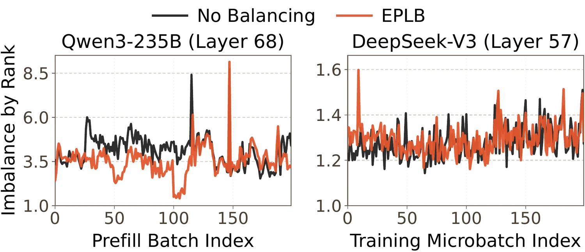
图（原文 Figure 6）：横轴是批次序号，纵轴是 rank 级不均衡度（最大 rank 负载比均值）。左图为 Qwen3-235B-A22B 第 68 层的 prefill、混合数据；右图为 DeepSeek-V3-671B-A37B 第 57 层的训练，取第 3510 个 global batch 附近。左图中 EPLB 曲线整体低于 no-balancing，说明它在 prefill 上确实起作用，但仍出现高于 no-balancing 的尖峰；右图中 EPLB 有相当长的区段稳定高于 no-balancing，即在该模型的训练上反而更差——这与 §8.2 对 DeepSeek-V3 的判断一致（EPLB 与 LPLB 表现与 Megatron-LM 相当甚至更差）。两图共同支撑论文的结论：历史统计与实际负载偏离时，按旧统计建的布局会制造新的 straggler。图中 EP=64，EPLB 重均衡间隔为 prefill 50 个 batch、训练 3 个 global batch。
MoE 训练里还有另一类「均衡」：辅助路由损失。GShard 用一个辅助损失让每个专家的平均 router 概率与它实际收到的 token 占比对齐；DeepSeekMoE 则从近期负载更新一个专家级的路由 bias，压低过载专家、抬高欠用专家，且不引入干扰梯度（§2.2）。
论文明确这两类是互补而非互换的。训练期的辅助路由损失主要目的是稳定优化、防止路由塌缩（routing collapse）、保留专家特化，它们促成的是「长期平均意义上的均衡」，无法保证逐 microbatch 的实现负载均衡——细粒度 MoE 加大 EP 的组合下尤其如此。系统侧技术纠正的是运行时的实际不均衡，同样不能替代路由损失，因为二者服务的建模目标不同（§2.2）。
为什么论文把均衡目标限定在训练与 serving prefill，不管 decode？
decode 每一步都要把大块模型权重与 KV cache 从显存读出，单 token 的计算量太小、盖不住这些搬运，因此瓶颈在访存而不在计算。论文的观察是计算侧不均衡的影响在这种情形下被访存延迟大幅稀释。理论上增大 batch size 可以提高计算强度、让不均衡重新成为瓶颈，但那会拉长每个输出 token 的时间，与 decode TPOT 的严格服务等级目标冲突。相比之下 prefill 是计算受限的、追求吞吐以降低 TTFT，是实际可优化的对象。论文因此把实际均衡目标定为 prefill（§3）。
同样是「专家负载不均衡」，为什么 EP 从 8 路提到 64 路会让问题质变？
一层 128 个专家时，EP=8 每 rank 有 16 个主专家，某个专家变热两倍只占本 rank 负载的十六分之一，被同 rank 的其他专家摊薄；EP=64 每 rank 只剩 2 个，同一个专家变热就直接把该 rank 的负载抬起来。论文在 §4.1 提到大 EP 下每 rank 的本地主专家常常只有两个或四个。关键在于 rank 是同步单位：一层内所有 rank 要完成 all-to-all 与后续计算才能进入下一层，整步耗时由最慢的 rank 决定。所以论文说大 EP 直接把专家之间的路由动态转成明显的 rank 间倾斜，并且随 EP 度数增大，计算拖尾、all-to-all 瓶颈与活跃内存尖峰这三个后果会复合放大（§1、§3）。
EPLB 已经在复制热专家了，为什么还会出现「比不做均衡更差」的情况？
EPLB 算法本身与负载估计无关，它按给定负载算布局。问题在部署方式：为了摊薄规划与重排开销，常见部署用最近路由历史来估计负载、每隔若干步（论文测量中 prefill 50 个 batch、训练 3 个 global batch）重均衡一次。当本轮实际负载偏离那份统计时，两个方向同时失准——按旧热度复制的副本占着冗余槽却收不到多少 token，而本轮真正变热的专家没有副本可分流，成为新的拖尾点。Figure 6 中 EPLB 曲线出现高于 no-balancing 的尖峰正是这个后果，论文的原话是 EPLB 在这种情况下会加剧不均衡、制造尖峰与新的 straggler（§3）。这一观察是全篇从「预测式」转向「精确负载」的动机。
第 1 章说明了「必须用精确负载」。但精确负载有一个时序上的硬约束，它决定了这套方案的可行性边界。
router 的 gating 计算完成，才知道本次每个 token 选中了哪些专家，也才拿到真实的负载矩阵 $\Lambda$。这意味着基于精确负载的一切决策都无法提前——规划与专家状态搬运必然落在关键路径上，暴露的开销包括在线求解与相当重的专家重排通信：前向要搬权重，训练的反向还要额外搬梯度或优化器状态（§1）。
这正是历史式方案存在的理由。用历史统计可以在 gating 之前就把布局算好、把权重搬好，从而把开销挪出关键路径、并分摊到若干步。精确负载放弃了这份便利，换来的是零预测误差。这笔交易划不划算，取决于关键路径上的搬运有多贵。
GPU 集群的连接分两层。scale-up 是机内或机架内的高带宽直连域，提供每卡数百 GB/s 的带宽以及 load/store 式的内存语义；scale-out 是包交换网络，通常每张网卡只有数十 GB/s（§2.1）。两者的带宽与访问方式差别见 GPU 通信。
标准 RDMA 集群的高带宽 scale-up 只覆盖单台 4 卡或 8 卡服务器，跨服务器的流量必须走较慢的 scale-out。EP64 意味着一个 EP 组横跨 8 到 16 台服务器（按 64/8 与 64/4 推算），专家状态搬运绝大部分是跨机的。论文的判断很直接：大 EP 下跨多机搬运大量专家状态代价过高，在热路径上不实用（§1）。
机架级节点把 scale-up 域从单台 4/8 卡服务器扩展到整个机架，通常覆盖 64 张卡以上。RSN 内部仍由多台服务器组成，但跨服务器的 GPU 依然通过机架级的 scale-up fabric 直连（§2.1）。对 MoE 来说，这意味着一个 EP 组常常可以整体装进一个 RSN，token dispatch 留在快速的 scale-up fabric 上而不必走 scale-out。
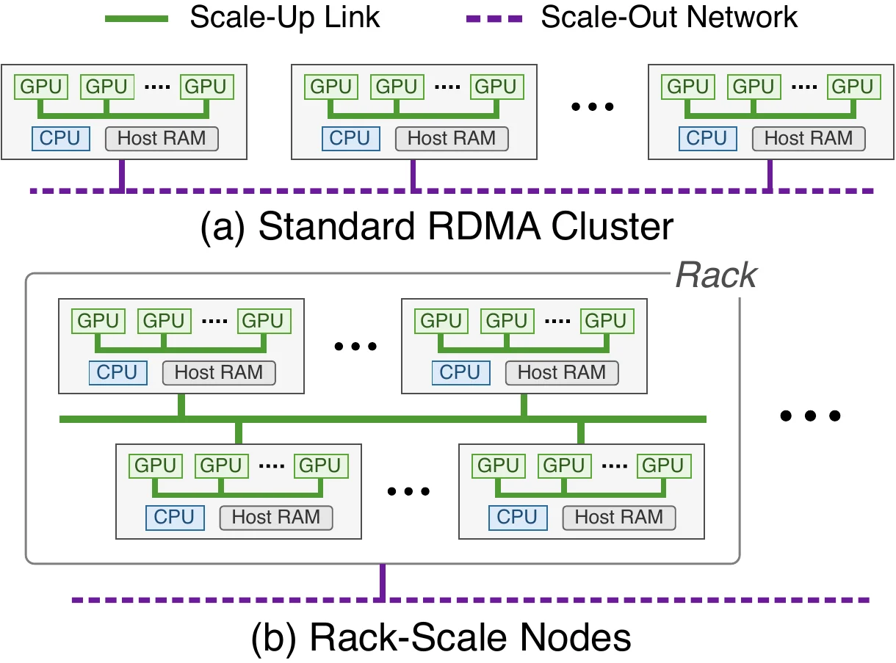
图（原文 Figure 2）：两种形态下 scale-up 域覆盖范围的对比。标准 RDMA 集群中，虚线框出的 scale-up 域局限在单台服务器内部的 4 到 8 张卡，跨服务器要经由 scale-out 网络；机架级节点中，同一个 scale-up 域横跨机架内的多台服务器，把数十张卡纳入同一个高带宽域。这张图支撑论文的核心前提：EP 组整体留在 scale-up 域内，热路径上的专家状态搬运才物理可行。
相应地，UltraEP 的部署假设是每个 EP 组位于一个 RSN 的 scale-up 域内，跨机架的扩展交给流水线并行与数据并行（§4）。这些并行方式的切分维度与通信特征见 模型并行。
论文用一张对照图概括自己与已有方案的区别，需要关注的是均衡决策发生在时间轴的哪个位置。
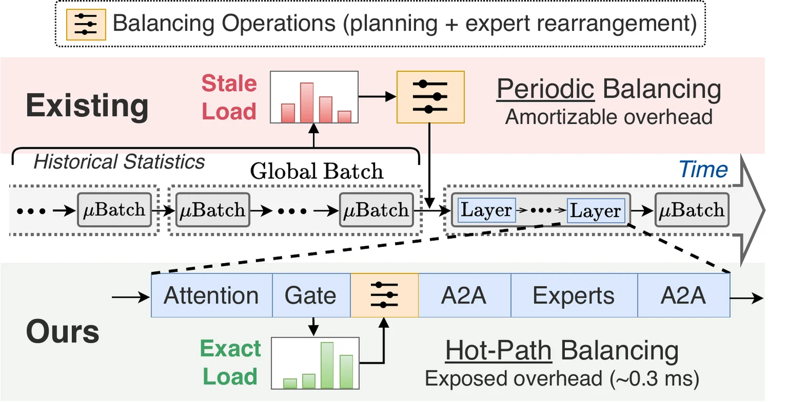
图（原文 Figure 1）：上栏 Existing 的均衡动作发生在 global batch 边界，输入是过期负载（stale load），因此在一个 batch 内部所有层都沿用同一份布局；下栏 Ours 把均衡插进每一层的执行序列——Attention 之后 Gate 产生精确负载，紧接着完成均衡决策，再进入 all-to-all 与专家计算。图中标注热路径均衡的暴露开销在 0.3 ms 量级，第 6 章的延迟分解会把这个数字精确到 0.33 ms。三个维度的差异由此确定：负载保真度（过期统计对精确负载）、决策时机（batch 边界对层内热路径）、均衡频率（每若干 batch 一次对每层每 microbatch 一次）。
论文强调 RSN 只是让热路径均衡在物理上成为可能，还剩两个必须解决的问题（§1、§4.4）。
控制面的问题是决策窗口太小。可用时间只有 gating 结束到 token dispatch 开始这一段，而要在这段时间内解出高质量的均衡方案。难点还在于决策空间：已有系统把放置与重路由解耦，放置提前规划、有充足预算，在线的重路由则用 round-robin 分配或在严格副本数限制下修补预测偏差。用精确负载追求最优均衡时，复制必须为重路由预留容量、副本候选变得灵活，大 EP 下决策空间显著变大。此外求解器要在分布频繁变化时保持稳定与快速，而不是过拟合到某个瞬时模式。
数据面的问题是带宽利用不足。RSN 提供高 scale-up 带宽，但均衡流量是不对称且高度动态的。已有通信栈为静态、可预测的集合通信优化，对这种不规则流量适应不好，瓶颈从链路带宽转移到控制路径开销——任务切分与流水、数据暂存、动态寻址，导致带宽吃不满；而盲目加大并行度既浪费，又会与被重叠的反向计算争抢同一批资源。另一个瓶颈是热专家的 fan-out：专家复制形成的是动态子组组播，大 EP 加倾斜负载下，副本很多的热主专家会带来可观的 fan-out 开销，抵消均衡收益。部分 RSN 支持把组播下放到交换机，但这类机制通常假定通信组与投递模式是预先确定的，而专家复制产生的组既稀疏又易变、逐层逐 microbatch 都在变。
论文的两个核心创新正对应这两面：配额式规划解决控制面（第 4 章），RSN 原生的专家状态通信解决数据面（第 5 章）。在此之前需要先交代专家在内存里怎么摆——这决定了搬运的量级。
「精确负载」与「历史负载」的差别落在哪一个时间点上？
router 的 gating 算完，才知道本次每个 token 选中了哪些专家，此时得到的负载矩阵是精确的、零预测误差的。代价是所有基于它的决策都无法提前：规划与专家状态搬运必然落在关键路径上，前向要搬权重，训练的反向还要搬梯度或优化器状态（§1）。历史负载的方向相反——用上几个批次的统计可以在 gating 之前把布局算好、权重搬好，从而把开销挪出关键路径并分摊到多步，代价是它对本次分布只是预测。所以这不是「谁的信息更多」的问题，而是「零预测误差」与「零热路径开销」之间的取舍；论文选前者，然后设法把后者的成本压到可接受。
为什么同一套算法在普通 8 卡机集群上不可行？
标准 RDMA 集群的高带宽 scale-up 只覆盖单台 4 卡或 8 卡服务器，跨服务器的流量走 scale-out 网络，后者通常每张网卡只有数十 GB/s，而 scale-up 是每卡数百 GB/s 并具备 load/store 内存语义（§2.1）。EP64 意味着一个 EP 组横跨 8 到 16 台服务器（按 64/8 与 64/4 推算），专家状态搬运绝大部分是跨机的。论文的判断是大 EP 下跨多机搬运大量专家状态代价过高、在热路径上不实用（§1）。机架级节点把 scale-up 域扩到整机架、通常 64 张卡以上，机架内跨服务器的 GPU 仍直连，一个 EP 组可以整体留在这个域内，热路径搬运才搬得完。这也是本方法最强的一条前提假设。
有了机架级节点就够了吗？
控制面要在 gating 结束到 token dispatch 开始这一小段时间内解出高质量方案。难度不只是时间紧：已有系统把放置与重路由解耦，放置可以提前规划，在线重路由用 round-robin 或在严格副本数限制下修补偏差；而用精确负载追求最优均衡时，复制必须为重路由预留容量、副本候选变灵活，大 EP 下决策空间显著变大，同时求解器还要在分布频繁变化时保持稳定，不能过拟合瞬时模式。数据面要执行不规则、易变的专家状态搬运，这类流量静态集合通信支撑不好，瓶颈从链路带宽转到控制路径开销（任务切分与流水、数据暂存、动态寻址），盲目加并行度又会与重叠的反向计算争资源；此外副本多的热专家有 fan-out 瓶颈，而交换机组播通常假定通信组预先确定，与专家复制那种稀疏易变的组不匹配。论文的结论是缺乏协同设计时这些开销容易把均衡收益完全抹掉（§1、§4.4）。
要判断「每层重新搬一遍权重」贵不贵，先要知道搬的是什么、有多少。这一章交代专家在内存里的摆法、一层内的执行顺序，以及论文把这个问题形式化成什么样的优化目标。
论文区分两个概念：逻辑专家是模型定义的专家身份，物理专家是某个 rank 实体化出来的一份实例。每个 rank 预留相同数量的主槽（main slot）与冗余槽（redundant slot）。主槽承载某个逻辑专家的原始实例，冗余槽则要么放一份某逻辑专家的副本、要么留空。这个固定布局让运行时保持干净和确定性，并给出一个一对多的逻辑到物理映射：每个逻辑专家有一个固定的主实例，加上零个或多个冗余副本（§4.1）。
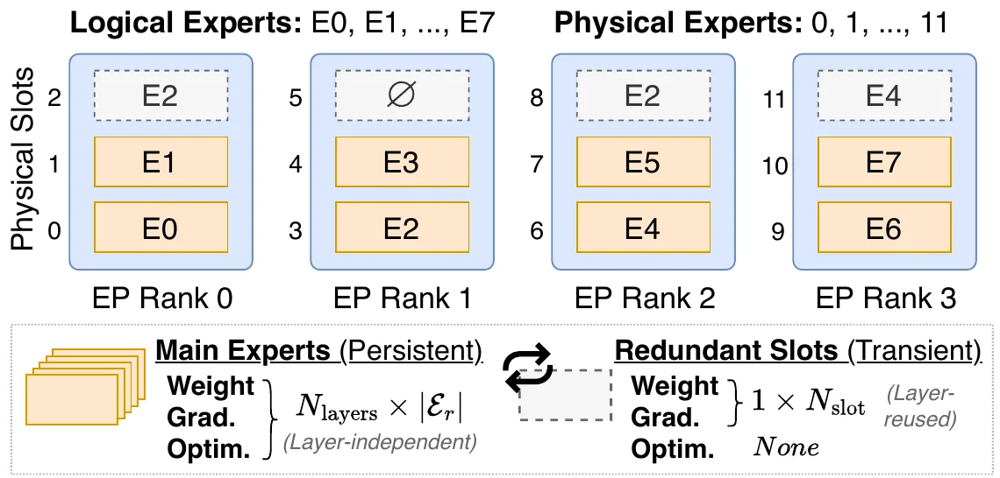
图（原文 Figure 7）：8 个逻辑专家、单层、EP=4、$N_{\mathrm{slot}}=1$ 的布局。每个 rank 有 2 个主专家槽与 1 个冗余槽，与本页贯穿示例的配置一致。图下部标注两类槽位的状态差异：主专家保留完整的权重、梯度与优化器状态，且每层各有一份；冗余槽只有权重与梯度 buffer、总量为 $1\times N_{\mathrm{slot}}$ 份而非每层一份，也没有优化器状态。这张图支撑本节的两个结论——固定槽位布局给出一对多映射，以及冗余槽的内存开销靠跨层复用被压到很小。
EPLB 的做法包含重排：把专家在设备之间挪位置，让各设备负载更平均。UltraEP 明确采取只复制的策略，从不重排主专家（§4.1）。
论文给的理由是大 EP 让重排变得不值得。大 EP 减少了每个 rank 上的本地主专家数量——常常只有两个或四个。在这个规模上，重排只能重洗一个很小的本地集合，边际收益递减；而它要付出的代价是可观的状态迁移、控制复杂度以及局部性破坏。相比之下，复制的成本效益更好：它扩展的是真正瓶颈处的服务容量（§4.1）。
用贯穿示例看：$r_0$ 承载 $e_0$（负载 10）与 $e_1$（负载 2）。重排能做的只是把这两个专家换到别的 rank 去，但 $e_0$ 一个专家的负载 10 就已经超过平均值 6，无论换到哪个 rank，那个 rank 都会超载。真正需要的是把 $e_0$ 的负载拆开，这只能靠复制。
对主专家，UltraEP 保持标准的训练或服务内存布局。对每个冗余槽，它不保存优化器状态（优化器更新只作用于主专家），并且让权重与梯度 buffer 跨层共享（§4.1）。
「跨层共享」的意思是：模型有 $N_{\mathrm{layers}}$ 个 MoE 层，但冗余槽的 buffer 只留一份，每层用完就被下一层复用。论文给的数字是 Qwen3-235B-A22B——94 个 MoE 层、128 个专家——单个冗余槽从 3.3 GB 权重加 6.6 GB 梯度，降到每 rank 36 MB 加 72 MB。这两个数字就是原值除以层数：$3.3\times1024/94\approx36$ MB，$6.6\times1024/94\approx72$ MB。
代价写在同一句话里：前向关键路径上出现一条紧的、逐层的权重实体化期限（§4.1）。既然 buffer 只有一份，那么每一层都必须在该层的专家计算开始前把这一层需要的副本权重装载进去，而且必须在下一层开始前把它腾出来。这条期限是第 5 章通信优化要满足的硬约束。
一层 MoE 前向在启用 UltraEP 后的执行顺序如下。
几个关键点。首先，UltraEP 复用已有的 notify-dispatch——即 token all-to-all 之前那次交换路由元数据、确定各对端收发规模与偏移的步骤——来收集全局路由信息，不额外增加一次通信（§4.2）。其次，拿到这份精确负载后，每个 rank 各自确定性地算出完全相同的复制与重路由计划，不需要额外同步；重路由把 router 输出从「token 到逻辑专家」改写成「token 到物理专家」；两者全在设备上完成，没有主机侧瓶颈（§4.2）。
第三点是关键路径的来源。复制方案一确定，UltraEP 就把主专家权重分发到各 rank 上的远端副本。这次同步可以与重路由重叠，但 token dispatch 必须等它结束，否则两者会争抢带宽。结果是规划与权重复制都留在关键路径上，构成严格的时限要求（§4.2）。
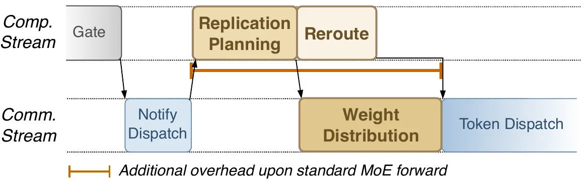
图（原文 Figure 8）：启用 UltraEP 的 MoE 前向时间线，分计算流与通信流两行。计算流上依次是 Gate、Replication Planning 与 Reroute；通信流上是 Notify Dispatch、Weight Distribution 与 Token Dispatch。图中标出了相对标准 MoE 前向新增的开销区间，位置正是规划与权重分发这一段。这张图支撑上一段的结论：Weight Distribution 与 Token Dispatch 在通信流上前后相接，说明后者必须等前者结束；而 Reroute 与 Weight Distribution 分处两流、时间上有重叠，对应论文所说的两者可并行。
训练还有反向。反向的第一件事是把冗余专家权重恢复到与前向相同的状态——因为 buffer 跨层复用，前向那一层的副本权重早已被后续层覆盖。这次通信可以与权重梯度（Wgrad）计算重叠，但到数据梯度（Dgrad）开始之前必须结束，以避免竞态（§4.2）。
MoE 反向结束后，每个主专家把它所有远端副本贡献的梯度聚合进自己的主梯度 buffer。论文明确这次归约保持与「没有副本」那种形式的等价性，并且必须在下一个 MoE 层开始前完成——因为冗余梯度 buffer 同样跨层复用（§4.2）。这一条加上「优化器更新只作用于主专家」，构成了训练语义不变的完整论证：副本只是临时的算力扩展，它们算出的梯度全部回流到主专家，优化器看到的东西与不做均衡时完全一样。
反向不重新求解复制方案，而是复用前向缓存的元数据；反向的重路由实际上是前向分配的 scatter-to-gather 逆操作，开销可忽略（§4.2）。
论文把每层的均衡决策形式化成一个在线优化问题，对每个 EP 组独立求解（§4.3）。输入是静态元数据 $(\mathcal{R},\mathcal{E},h,N_{\mathrm{slot}})$ 与运行时负载 $\Lambda$；输出是配额式复制方案 $U$ 与与之一致的重路由拆分 $q_{r,e,t}$。配额的第二个下标指承载该实例的 rank，本页在讨论「某 rank 的总负载」时写作 $u_{e,r}$、在讨论「某源发往某目标」时写作 $u_{e,t}$，两者是同一张表 $U$ 的元素，下标字母只反映该 rank 在当前语境中的角色（$r$ 为源、$t$ 为目标）。符号含义如下：$\mathcal{R}$ 是 EP 组内全部 rank、规模 $R:=\lvert\mathcal{R}\rvert$；$\mathcal{E}$ 是全部逻辑专家；$h(e)$ 是逻辑专家 $e$ 的 home rank，即承载其主实例的那个；$\mathcal{E}_r=\{e\in\mathcal{E}\mid h(e)=r\}$ 是 rank $r$ 上的主专家集合；$\mathcal{H}(e)$ 是承载 $e$ 各物理实例的 rank 集合。
前向的优化目标是把这一串延迟之和最小化：
$$T_{\text{solve\_rep}}^{fwd}+\max\left(T_{\text{reroute}}^{fwd},T_{w\_\text{distr}}^{fwd}\right)+T_{\text{tok\_a2a}}^{fwd}+T_{\text{moe}}^{fwd}$$
各项依次是规划求解、重路由、权重分发、token all-to-all 与 MoE 计算的延迟（§4.3 Eq.(1)）。这个式子直接对应上一节的时间线：重路由与权重分发取 $\max$ 而不是相加，因为它们可以重叠；其余各项串行相加。
反向的目标只剩两项：
$$\min\quad T_{\text{tok\_a2a}}^{bwd}+T_{\text{moe}}^{bwd}$$
反向复用前向的复制与重路由元数据，副本特有的通信被藏在计算之下，因此只有 token all-to-all 与 MoE 计算留在暴露路径上（§4.3 Eq.(2)）。
接下来三个式子是代价模型。MoE 计算用重路由后最忙的那个 rank 来建模，其中 $T_{\text{moe}}^{bwd}\approx 2T_{\text{moe}}^{fwd}$ 以计入 Wgrad 与 Dgrad 两部分计算：
$$T_{\text{moe}}^{fwd/bwd}\propto\max_{r\in\mathcal{R}}\sum_{e\in\mathcal{E}}u_{e,r}$$
token all-to-all 由最忙的发送端或接收端主导，反向在同一负载分布下遵循与前向相同的不均衡模式：
$$T_{\text{tok\_a2a}}^{fwd/bwd}\propto\max_{r\in\mathcal{R}}\max\left(\sum_{e\in\mathcal{E}}\lambda_{r,e},\sum_{e\in\mathcal{E}}u_{e,r}\right)$$
内层的 $\max$ 比较的是同一个 rank 的两个量：$\sum_e\lambda_{r,e}$ 是它作为源要发出的 token 总数，$\sum_e u_{e,r}$ 是它作为目标要接收的 token 总数。论文指出，训练中每个 rank 发出的 token 数由 microbatch 形状与并行配置固定，prefill 中则由切块预填充的块大小上界约束（§4.3）；切块预填充的机制与 token budget 见 Chunked Prefill。既然发送侧在给定配置下是固定的，可优化的就只有接收侧 $\sum_e u_{e,r}$——这与 MoE 计算的优化对象是同一个量。
权重分发的延迟由承载最热主专家的 rank 主导：
$$T_{w\_\text{distr}}^{fwd}\propto\max_{r\in\mathcal{R}}\sum_{e\in\mathcal{E}_{r}}\left(\lvert\mathcal{H}(e)\rvert-1\right)$$
这里 $\lvert\mathcal{H}(e)\rvert-1$ 是专家 $e$ 需要发出的远端副本份数（总实例数减去自己的主实例），对该 rank 的所有主专家求和就是它要发出的总份数（§4.3 Eq.(5)）。这个式子解释了第 5 章要处理的 fan-out 瓶颈从哪来。
三个代价模型都对 rank 取最大值，原因是同一个：EP 组内的 rank 每层都要同步，整步耗时由最慢的 rank 决定。
取本页开头的例子。均衡之前不存在任何副本，因此每个逻辑专家的全部负载都落在其 home rank 上，即 $u_{e,h(e)}=\lambda_e$。
Eq.(3) 的 MoE 计算项：$\sum_e u_{e,r}$ 在四个 rank 上分别是 12、6、4、2，取最大得 12。第 4 章均衡后四个 rank 各为 6，取最大得 6。代价模型的取值从 12 降到 6，与「最慢 rank 的工作量减半」一致。
Eq.(4) 的 token all-to-all 项：发送侧 $\sum_e\lambda_{r,e}$ 在四个 rank 上分别是 8、6、6、4（按负载矩阵逐行求和），接收侧均衡前是 12、6、4、2。逐 rank 取内层 $\max$ 得 12、6、6、4，外层取最大得 12。均衡后接收侧变成 6、6、6、6，内层 $\max$ 得 8、6、6、6，外层取最大得 8。这个 8 来自 $r_0$ 的发送量——它已经由负载矩阵固定，均衡改不动。这正是论文所说「训练中每个 rank 发出的 token 数由 microbatch 形状与并行配置固定」的含义：all-to-all 项存在一个由发送侧决定的下界。
Eq.(5) 的权重分发项：均衡前所有 $\lvert\mathcal{H}(e)\rvert=1$，求和为 0，没有权重要搬。第 4 章的方案给 $e_0$ 建了 2 个副本（$\lvert\mathcal{H}(e_0)\rvert=3$），其余专家不变，于是 $r_0$ 的求和是 $(3-1)+(1-1)=2$，其余 rank 为 0，取最大得 2。这说明均衡的代价确实由承载最热主专家的那个 rank 承担——$e_0$ 的 home rank 是 $r_0$，权重就得从 $r_0$ 发出去。
三项的方向一致：均衡把 Eq.(3) 从 12 压到 6、把 Eq.(4) 从 12 压到由发送侧决定的 8，代价是 Eq.(5) 从 0 涨到 2。这笔交易划不划算，取决于「搬 2 份权重」相对「少算 6 个单位」的时间成本，也就是第 5 章通信优化要解决的问题。这是构造示例，用于验证代价模型的取值方向，不是论文的实验数据。
最后是四条约束（§4.3）。第一，主专家的放置不可变——这就是「只复制不重排」在形式化中的体现。第二，每个 rank 的冗余槽预算为 $N_{\mathrm{slot}}$，且同一个逻辑专家不得在同一 rank 上出现两次。第三，副本引入的反向通信必须被完全隐藏，以保证反向不产生可见开销。第四，每个新建副本至少要承载 $u_{\min}$ 的配额，论文取 $u_{\min}=1024$。
为什么冗余槽敢不保存优化器状态？训练结果会不会因此改变？
副本的角色是临时的算力扩展，不是独立的参数副本。论文的设计是：优化器更新只在主专家上进行，因此冗余槽不需要动量、二阶矩这类优化器状态（§4.1）。反向执行时，MoE 反向结束后每个主专家把它所有远端副本贡献的梯度聚合进自己的主梯度 buffer，论文明确这次归约保持与「没有副本」那种形式的等价性（§4.2）。两者相加的结果是：优化器看到的梯度与不做均衡时完全一样，参数更新轨迹不变。
这条论证在生产训练中得到印证——§8.6 报告 loss 曲线符合预期的预训练轨迹，论文给的原因正是 UltraEP 只改变物理执行逻辑、保留训练语义。此外冗余专家还被排除在框架侧的参数与梯度桶、优化器状态与 checkpoint 之外（§7），所以它们也不会污染保存下来的模型。
跨层复用省了多少内存，代价是什么？
Qwen3-235B-A22B 有 94 个 MoE 层。若每层每个冗余槽都留一份权重与梯度 buffer，单个冗余槽需要 3.3 GB 权重与 6.6 GB 梯度。跨层共享后只留一份、每层用完由下一层复用，于是每 rank 降到 36 MB 与 72 MB，即原值除以层数：$3.3\times1024/94\approx36$ MB，$6.6\times1024/94\approx72$ MB（§4.1）。
代价是论文在同一句里写明的：前向关键路径上出现一条紧的、逐层的权重实体化期限。既然 buffer 只有一份，每层都必须在该层专家计算开始前把这一层需要的副本权重装载好，并在下一层开始前腾出来。反向侧同理——冗余梯度 buffer 也跨层复用，所以梯度归约必须在下一个 MoE 层开始前完成（§4.2）。这条期限是第 5 章通信优化必须满足的硬约束，也是为什么论文要专门为这类不规则搬运做 tile 流水线与中继。
为什么 Eq.(3)、Eq.(4)、Eq.(5) 三个代价模型都是对 rank 取最大值？
一层 MoE 的执行里，所有 rank 要完成 token all-to-all、专家计算与 combine 才能进入下一层，这是一个同步点。任何一个 rank 慢，其余 rank 都在等它。因此建模某一项延迟时，起决定作用的不是平均值而是最大值。
三项各自取最大的对象不同：Eq.(3) 的 MoE 计算取重路由后负载最大的 rank，即 $\max_r\sum_e u_{e,r}$；Eq.(4) 的 token all-to-all 先在每个 rank 内比较「要发出的 token 数」与「要接收的 token 数」取较大者，再在 rank 之间取最大——因为一次 all-to-all 的耗时由最忙的发送端或接收端决定；Eq.(5) 的权重分发取要发出副本份数最多的 rank，即 $\max_r\sum_{e\in\mathcal{E}_r}(\lvert\mathcal{H}(e)\rvert-1)$，这个量落在承载最热主专家的 rank 上。
Eq.(4) 还有一个推论：发送侧 $\sum_e\lambda_{r,e}$ 在训练中由 microbatch 形状与并行配置固定、在 prefill 中由切块预填充的块大小上界约束，均衡改不动它（§4.3）。所以 all-to-all 这一项存在一个由发送侧决定的下界，可优化的只是接收侧——而接收侧正是 Eq.(3) 的优化对象。两项共享同一个优化变量 $\sum_e u_{e,r}$，这也是配额求解直接瞄准它的原因。
第 3 章确定了优化对象：重路由之后各 rank 的负载 $\sum_e u_{e,r}$。这一章讲 UltraEP 怎么在 gating 到 dispatch 之间的窗口里把它解出来。
已有系统把两件事分开做：先决定副本放在哪些 rank 上（放置），再决定每个 token 去哪个实例（重路由）。放置可以提前规划、有充足的时间预算；在线的重路由则用简单启发式，比如把某专家的 token 在其各副本之间轮转均分（round-robin），或者在严格的副本数限制下修补预测偏差（§4.4）。
问题在于优化目标错位。round-robin 让某个专家的 token 在其副本之间均分，但各副本所在的 rank 上还有别的专家。均分之后，各 rank 的总负载并不相等。论文对 EPLB 家族的判断是：它们优化的是重路由之前的热度，而不是重路由之后的负载上界（§8.5）。
用贯穿示例可以看到这个差距。假设某个方案给热专家 $e_0$ 在 $r_2$ 与 $r_3$ 上各建了一个副本，于是 $e_0$ 有三个实例（$r_0$、$r_2$、$r_3$）。round-robin 把 $e_0$ 的 10 个单位在三个实例上轮转，得到 4、3、3。加上各 rank 原有的其他主专家负载，四个 rank 的总负载变成 6、6、7、5，rank 级不均衡度 $7/6\approx1.1667$。而如果直接以「各 rank 总负载相等」为目标去分，$e_0$ 的三个实例应该分到 4、2、4——因为 $r_2$ 本来就有 $e_4,e_5$ 共 4 个单位、只剩 2 个单位的空间，而 $r_3$ 只有 2 个单位、还能吃 4 个。这样四个 rank 各为 6，不均衡度 1.0。
关键区别：round-robin 只看「这个专家的 token 怎么在它的副本间分」，看不到「每个副本所在的 rank 上还有多少别的负载」。配额求解的做法是反过来——先算出每个实例应该接多少才能让各 rank 总负载达标，再据此决定副本建在哪。
UltraEP 不先定副本再补重路由，而是直接求解最终的每实例负载配额 $U=\{u_{e,r}\}$（§5）。配额的定义是：$u_{e,r}>0$ 当且仅当 rank $r$ 承载逻辑专家 $e$ 的一个物理实例，而这个数值就是该实例在重路由之后承接的 token 负载。
一个变量绑住了两件事。大于零意味着「这里要有一份实例」，数值本身则是「这份实例接多少流量」。论文把这个性质表述为：配额把副本创建与 token 重路由耦合起来——只有当一个副本能承载有用的负载时它才被实体化，而重路由随后按解出的配额拆分来实现，并带上局部性（§1）。
这个设计带来的直接好处是避开了组合爆炸。论文的说法是：用配额作为耦合变量，每次探测在选副本的同时就预留了重路由容量，因此不必枚举副本集合、也不必做 token 级路由；同时它避免产生那种「满足了放置启发式却收不到多少流量」的无效副本（§5.1）。
求解的入口是一个判定问题：给定一个负载阈值 $\tau$，能不能只靠复制就让每个 rank 的负载都降到 $\tau$ 以下？
先定义两个量。记 $\lambda_e=\sum_{r\in\mathcal{R}}\lambda_{r,e}$ 为专家 $e$ 的总负载，$\ell_r=\sum_{e\in\mathcal{E}_r}\lambda_e$ 为 rank $r$ 的初始负载。对候选阈值 $\tau$：
$$\mathrm{exc}_r(\tau)=\max(\ell_r-\tau,0),\qquad\mathrm{slk}_r(\tau)=\max(\tau-\ell_r,0)$$
$\mathrm{exc}_r(\tau)$ 是 rank $r$ 必须卸掉的超额负载，$\mathrm{slk}_r(\tau)$ 是它还能吸收的空闲（§5.1 Eq.(6)）。两者至多一个为正：负载超过阈值的 rank 有超额、低于阈值的有空闲。
论文对可行性的定义是：如果超额负载能从超载 rank 重新分配到合法的接收 rank，且不违反空闲、每 rank 的槽位预算与不重复约束，使每个 rank 最终负载不超过 $\tau$，那么 $\tau$ 是可行的（§5.1）。
用贯穿示例代入 $\tau=6$：$\mathrm{exc}$ 在四个 rank 上是 6、0、0、0，$\mathrm{slk}$ 是 0、0、2、4。$r_0$ 要卸掉 6 个单位，可用的空闲总量是 $2+4=6$，刚好够——但够不够只是必要条件，还要看槽位约束与专家的可转移量允许不允许这么分。这就是可行性判定要做的事。
UltraEP 在「目标 rank 负载」与「初始最大 rank 负载」之间二分 $\tau$，每次探测跑一遍贪心可行性判定（§5.1）。二分区间的初始化是：
$$\tau_{\mathrm{lo}}\gets\beta\cdot\left\lceil\frac{1}{R}\sum_r\ell_r\right\rceil,\qquad\tau_{\mathrm{hi}}\gets\max_r\ell_r$$
下界是平均负载乘以目标均衡系数 $\beta$（论文取 1.01），上界是当前最大 rank 负载——不做任何均衡时的取值。
对候选 $\tau$，判定过程按残余超额降序访问超载 rank，对每个 rank 按 $\lambda_e$ 降序访问它的主专家。对当前专家，它把尽可能多的负载转给空闲最大的合法接收 rank，受配额下限 $u_{\min}$ 约束。单次转移量是三个量的最小值：
$$\delta\gets\min(\mathrm{exc}_r,\mathrm{slk}_{t^\star},\mathrm{cap}_e)$$
其中 $t^\star=\arg\max_{t\in\mathcal{T}}\mathrm{slk}_t$ 是空闲最大的合法目标，$\mathcal{T}$ 是同时满足空闲、槽位与不重复三个约束的 rank 集合，$\mathrm{cap}_e$ 是专家 $e$ 剩余可转移的负载。若 $\delta 被接受的转移同时做两件事：创建一个副本，并更新它在临时计划 $\tilde U$ 中的配额。论文强调这一点的意义在于放置本身已经编码了有效的重路由容量（§5.1）。全部残余超额被排空则这次探测可行，记录 $\tilde U$ 并转向更小的阈值；否则不可行，向上搜索。 回到本页开头的例子：$R=4$，8 个逻辑专家，$N_{\mathrm{slot}}=1$，$u_{\min}=1$ 个单位，$\beta=1.01$。初始 rank 负载 12、6、4、2，总负载 24。 二分区间：$\tau_{\mathrm{lo}}=1.01\times\lceil24/4\rceil=1.01\times6=6.06$，$\tau_{\mathrm{hi}}=12$。 第一次探测 $\tau=\lfloor(6.06+12)/2\rfloor=9$。$\mathrm{exc}=(3,0,0,0)$，$\mathrm{slk}=(0,3,5,7)$。只有 $r_0$ 超载、要卸 3 个单位。$r_0$ 的主专家按 $\lambda_e$ 降序是 $e_0$（10）、$e_1$（2）。合法目标里 $r_3$ 空闲最大（7），转移量 $\delta=\min(3,7,10)=3$。于是 $e_0$ 在 $r_3$ 上建副本、配额 3；$r_0$ 的超额清零。四个 rank 的重路由后负载变成 9、6、4、5，全部不超过 9，可行。记录方案，$\tau_{\mathrm{hi}}\gets9$。 第二次探测 $\tau=\lfloor(6.06+9)/2\rfloor=7$。$\mathrm{exc}=(5,0,0,0)$，$\mathrm{slk}=(0,1,3,5)$。$r_0$ 要卸 5 个单位。$e_0$ 先给空闲最大的 $r_3$：$\delta=\min(5,5,10)=5$，一次就卸完。负载变成 7、6、4、7，可行。$\tau_{\mathrm{hi}}\gets7$。 第三次探测 $\tau=\lfloor(6.06+7)/2\rfloor=6$。$\mathrm{exc}=(6,0,0,0)$，$\mathrm{slk}=(0,0,2,4)$。$r_0$ 要卸 6 个单位。$e_0$ 先给 $r_3$（空闲 4）：$\delta=\min(6,4,10)=4$，建副本、配额 4；此时 $\mathrm{exc}_{r_0}=2$，$\mathrm{slk}_{r_3}=0$。再找合法目标，只剩 $r_2$（空闲 2）：$\delta=\min(2,2,6)=2$，建副本、配额 2；超额清零。$e_0$ 的三个实例配额是 $r_0$ 上 4、$r_2$ 上 2、$r_3$ 上 4，四个 rank 的负载各为 6，可行。$\tau_{\mathrm{hi}}\gets6$，此时 $\tau_{\mathrm{lo}}=6.06>\tau_{\mathrm{hi}}=6$，循环结束。 最终方案：$\tau=6$，四个 rank 的重路由后负载都是 6，rank 级不均衡度 $6/6=1.0$；只用了 2 个冗余槽（$r_2$ 与 $r_3$ 各一个），4 个可用槽位中还剩 2 个空着。初始不均衡度 2.0 被完全消掉。 注意第三次探测里 $u_{\min}$ 的作用：两次转移量分别是 4 和 2，都不小于 $u_{\min}=1$，所以都被接受。若把 $u_{\min}$ 调到 3，第二次转移的 $\delta=2$ 会被拒绝，$r_0$ 的超额排不空，$\tau=6$ 就变成不可行，最终阈值会停在 7。这正是 $u_{\min}$ 的设计意图——宁可容忍略高的阈值，也不建那种只承接零星流量、却要付出完整权重搬运代价的副本。 预期输出： 验证的机制： 观察重点：三处对照。第一，二分过程的三行输出显示阈值从 9 收敛到 6，而 $\tau=6$ 时四个 rank 负载完全相等——这是配额直接以「各 rank 总负载达标」为目标的结果。第二，同一副本集合下 round-robin 得到 6/6/7/5、不均衡 1.1667，比配额求解的 1.0 差，差距来自它看不到各 rank 上其他专家的负载。第三，本地优先把跨 rank 在飞 token 从 54.2% 降到 41.7%；代码对两个分支都断言了双向守恒并通过，即各实例接到的总量都恰好等于配额（$e_0$ 为 4/2/4）、各源发出的总量都恰好等于其需求——这验证了论文所说「本地优先只改变哪个源消费配额，不改变配额本身」。 简化条件：这是构造示例，规模远小于论文实验（EP=4 对 EP64、8 个专家对 128 到 256 个）。负载单位取 1024 token 使 $u_{\min}$ 等于 1，便于手算。代码是 CPU 上的串行 Python 实现，论文的实现全在 GPU 上、用单个 SM 上的 cooperative thread block 跨 warp 并行评估多个阈值探测（§5.3）；本代码不复现 GPU 并行化，也不包含 token 级的累积配额前缀扫描与实际的 all-to-all 执行。 $U$ 一旦确定，重路由不再回访均衡目标，它只负责把 $U$ 实体化成一个源侧拆分 $Q=\{q_{r,e,t}\}$，其中 $q_{r,e,t}$ 是从源 rank $r$ 发往 $e$ 在 rank $t$ 上物理实例的 token 数（§5.2）。$Q$ 必须满足双向守恒： $$\sum_{t\in\mathcal{H}(e)}q_{r,e,t}=\lambda_{r,e},\qquad\sum_{r\in\mathcal{R}}q_{r,e,t}=u_{e,t}$$ 按源看要凑满该源对该专家的需求，按目标看要凑满该实例的配额（§4.3 Table 1）。 在这两个约束下还有自由度，UltraEP 用它换局部性：对每个专家，先让来自同一 host rank 的 token 消费该 host 的配额。论文对这一步的正确性给了一句关键论证——优先使用本地配额只改变哪个源 rank 消费某个已解出的配额，不改变配额本身；因此 token 局部性在不破坏已解阈值的前提下减少了跨 rank 流量（§5.2）。 这句话可以直接从守恒条件读出来。阈值由每个 rank 的重路由后负载 $\sum_e u_{e,r}$ 决定，而第二个守恒式说每个实例接到的总量恒等于 $u_{e,t}$。本地优先只是在满足这个等式的前提下重排「这些 token 分别来自哪些源」，因此各 rank 接到的总量一个字节都没变。 本地配额消费完后，残余的源需求按剩余配额的比例分摊，用确定性取整来同时保持每源需求与每实例配额（§5.2）： $$q_{r,e,t}\gets\text{round}\left(\hat{\lambda}_{r,e}\times\frac{\hat{u}_{e,t}}{\sum_{t'}\hat{u}_{e,t'}}\right)$$ 其中 $\hat{\lambda}_{r,e}$ 与 $\hat{u}_{e,t}$ 分别是本地消费后的残余需求与残余配额。 用贯穿示例看 $e_0$：三个实例配额 4、2、4 分别在 $r_0$、$r_2$、$r_3$；四个源对 $e_0$ 的需求是 4、3、2、1。本地优先阶段，$r_0$ 的 4 个 token 全部留在本地（正好吃满 $r_0$ 的配额 4），$r_2$ 的 2 个留在本地（吃满 $r_2$ 的配额 2），$r_3$ 的 1 个留在本地。剩下 $r_1$ 的 3 个 token 没有本地实例，只能跨 rank，去唯一还有残余配额的 $r_3$（残余 3）。结果是 10 个单位里只有 3 个跨 rank。若关闭本地优先、全部按比例分摊，跨 rank 的量会上升——代码输出显示全部专家合计从 41.7% 升到 54.2%。 配额给出的是聚合的「源到实例」计数，而 all-to-all dispatch 需要的是每个 token 的目标。UltraEP 的做法是：每个 rank 用一次轻量前缀扫描，把分解结果存成按某逻辑专家的各物理实例排序的累积配额；dispatch 时，$(r,e)$ 这一对的第 $j$ 个本地 token 被发往累积配额首次覆盖 $j$ 的那个物理实例（§5.2）。 这样 token 分配就退化成一次 rank 本地的上界查找，与前面的优化过程完全无关。以 $e_0$ 的三个实例（配额 4、2、4）为例，累积配额是 4、6、10；某个源上第 5 个 token 落在区间 $(4,6]$，因此发往第二个实例。 UltraEP 把配额求解完全实现在设备上，避免热路径上的 CPU 同步与设备到主机的元数据搬运（§5.3）。 论文指出的难点是这个算法不是简单的数据并行扫描：每次二分探测都会改动超额、空闲、槽位占用与每专家的副本集合，而可行性判定在已接受的转移之间存在顺序依赖——后一次转移能选哪个目标，取决于前一次转移消耗了多少空闲、占了哪个槽。 论文的做法是利用 warp 级并行与数据局部性：用单个流式多处理器（SM）上的一个 cooperative thread block，把负载矩阵与放置状态放进共享内存，跨 warp 评估多个阈值探测，并用 warp 级归约在槽位与不重复约束下寻找可行的高空闲目标。同一个 kernel 直接产出最终的槽位映射、配额与累积重路由元数据（§5.3）。SM、warp、共享内存与线程块的组织方式见 GPU 执行模型。 论文对这一设计的总结是：它把配额求解从 CPU 侧的组合搜索变成一个紧凑的、GPU 常驻的可行性问题（§5.3）。 为了把配额求解本身的贡献隔离出来，论文构造了 EPLB$+$ 这个基线：喂给它精确负载、用标准 EPLB 加 round-robin 重路由，通信机制保持 UltraEP 的不变（§8.1）。两者的差别因此只在规划算法。 这是原文 Table 3，其中结果不均衡为 rank 级（最大 rank 负载比均值）；数值为 Figure 15 全部模拟场景的平均值，模拟中的初始负载用幂律分布合成以贴近真实 MoE 路由的倾斜程度。「在飞 token」指未被本地 rank 吸收、需要跨 rank 传输的 token 占比。 下图给出更细的分布，需要关注冗余槽预算变紧时两者的退化速度差异。 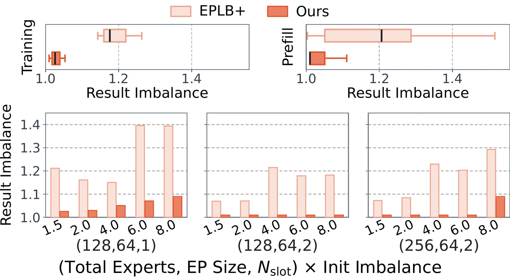 图（原文 Figure 15）：上排是全部训练与 prefill 评测的 rank 级不均衡度分布，UltraEP 的分布更贴近理想值 1.0 且尾部明显更短。下排是模拟结果，横轴为初始不均衡度、分三组 (专家数, EP 度数, $N_{\mathrm{slot}}$) 配置。在最紧的预算配置下（$N_{\mathrm{slot}}=1$）且初始不均衡达 6.0 与 8.0 时，图中 EPLB$+$ 升到约 1.40，而 UltraEP 分别约 1.07 与 1.09（该图未逐柱标注，这三个值由本页读图得到）——论文正文的表述是 EPLB$+$ 高达 1.4 而 UltraEP 仍低于 1.1。这张图同时说明两点：配额求解在各种配置下都更好；但预算变紧、倾斜加剧时两者都会退化，只是 UltraEP 退化得慢。 论文对这个差距的归因是：UltraEP 直接优化重路由后的负载上界，也就是均衡的真实目标，而不是 EPLB$+$ 关注的重路由前的不均衡。EPLB$+$ 按重路由前的热度盲目复制，UltraEP 只在副本能带来足够均衡收益时才实体化它；这解释了 UltraEP 的资源效率，并显著减少了专家复制流量（§8.5）。冗余槽消耗 45 对 107 这一项差距，主要就来自 $u_{\min}$ 剪掉的那些无效副本——这一步把归因落到 $u_{\min}$ 这一具体机制上，是本页的推断，论文原文只把差距归因于「只在有足够均衡收益时才实体化副本」的整体设计。 一处推断（非论文结论）：二分加贪心判定得到的 $\tau$ 不是全局最优。每次探测用的是贪心可行性判定——按残余超额降序取 rank、按 $\lambda_e$ 降序取专家、送给空闲最大的目标——贪心判定为不可行的阈值未必真的不可行。论文全篇（标题、摘要、§8）用的词是 near-optimal 而非 optimal，也未给出最优性或近似比证明。 「先定副本、再用 round-robin 分流」到底差在哪里？ 已有系统把放置与重路由解耦：放置提前规划，在线重路由用 round-robin 之类的简单启发式。问题是 round-robin 的均分对象是「某个专家的 token 在它的各副本之间」，而各副本所在的 rank 上还有别的专家在占用算力，均分之后各 rank 的总负载并不相等。 本页的贯穿示例给出了具体差距。热专家 $e_0$ 有三个实例（在 $r_0$、$r_2$、$r_3$），总负载 10 个单位。round-robin 轮转均分得到 4、3、3，加上各 rank 原有的其他主专家负载后，四个 rank 总负载是 6、6、7、5，不均衡度 $7/6\approx1.1667$。配额求解则按「各 rank 总负载达标」反推，得到 4、2、4——因为 $r_2$ 本来就有 4 个单位、只剩 2 个空间，$r_3$ 只有 2 个、还能吃 4 个——四个 rank 各为 6，不均衡度 1.0。 论文对这个差距的表述是：UltraEP 直接优化重路由后的负载上界（均衡的真实目标），而 EPLB$+$ 关注的是重路由前的不均衡（§8.5）。模拟均值上体现为结果不均衡 1.03 对 1.19。 为什么要设 $u_{\min}=1024$ 这个配额下限？ 一个副本的成本是固定的：前向要把主专家权重整份搬过去（Eq.(5) 里它贡献 1 份 fan-out），训练的反向还要把它的梯度归约回主专家。这份成本与它承接多少 token 无关。所以若某个副本只接几十个 token，这笔交易是亏的。 算法里的体现是 $\delta 效果反映在资源消耗上：Table 3 中 UltraEP 消耗的冗余槽数是 45，EPLB$+$ 是 107，少 57.9%。论文把这一差距归因于 UltraEP 只在副本能带来足够均衡收益时才实体化它，而 EPLB$+$ 按重路由前的热度盲目复制（§8.5）。少建副本同时也意味着更少的权重分发流量。（论文把这项差距归因于「只在有足够收益时才实体化副本」这一整体设计；把它进一步落到 $u_{\min}$ 这一具体机制上，是本页的推断。） 本地优先为什么不会破坏已经解出的阈值？ 重路由拆分 $Q$ 必须满足双向守恒：按源看 $\sum_{t\in\mathcal{H}(e)}q_{r,e,t}=\lambda_{r,e}$，按目标看 $\sum_{r\in\mathcal{R}}q_{r,e,t}=u_{e,t}$。阈值是由每个 rank 的重路由后负载 $\sum_e u_{e,r}$ 决定的，而第二个守恒式保证每个实例接到的总量恒等于它的配额 $u_{e,t}$。本地优先只是在满足这个等式的前提下重排「这些 token 分别来自哪些源」，各 rank 接到的总量一个字节都没变。论文的原话是：优先使用本地配额只改变哪个源 rank 消费某个已解出的配额，不改变配额本身，因此 token 局部性在不破坏已解阈值的前提下减少了跨 rank 流量（§5.2）。 收益是跨 rank 流量下降。本页示例中，$e_0$ 的三个实例配额 4、2、4，本地优先让 $r_0$、$r_2$、$r_3$ 各自的 token 先留在本地，只有 $r_1$ 的 3 个 token 必须跨 rank；全部专家合计，跨 rank 在飞 token 从 54.2% 降到 41.7%。论文的模拟均值是 UltraEP 的在飞 token 占比 96.0%，相对 EPLB$+$ 的 99.9% 低 3.9 个百分点，正文表述为减少 3.9% 的 token 流量；同一表格还给出 UltraEP 关闭局部性时为 98.4%，即局部性本身贡献其中的 2.4 个百分点（Table 3）。 二分搜索找到的 $\tau$ 是最优解吗？ 二分搜索本身只负责在「可行」与「不可行」之间找边界，边界的位置取决于判定函数的准确性。这里的判定是贪心的：按残余超额降序访问超载 rank，对每个 rank 按 $\lambda_e$ 降序访问主专家，把负载送给当前空闲最大的合法目标。贪心的选择顺序未必最优——比如某次把一个专家的负载送给了空闲最大的 rank，可能恰好占掉了另一个专家唯一可用的槽位，导致后续排不空超额、这个阈值被判为不可行；而换一种分配顺序它可能是可行的。 论文的措辞与此一致：§5.1 明确写的是「runs a greedy feasibility oracle for each probe」，全篇（标题、摘要、§8）用的都是 near-optimal 而非 optimal，也没有给出最优性证明或近似比分析。所以正确的读法是：这套算法在极短的时间预算内（模拟均值 0.111 ms）拿到了实测上非常接近理想的均衡（1.01 到 1.04），但它是一个有效的启发式，不是最优算法。这一条判断属于本页的推断，不是论文的结论。 第 4 章解出了方案，这一章处理执行。第 3 章已经指出，跨层复用给前向关键路径留下一条紧的逐层权重实体化期限，这一章就是要满足它。 UltraEP 的均衡流量是 RSN scale-up fabric 上一张运行期自适应的稀疏传输图，而不是规则的集合通信。它服务两条路径：一是前向的权重分发与反向的权重重分发，方向都是从每个主专家到它的远端副本；二是反向的梯度归约，方向是从那些副本回到主专家。论文明确目标是在易变的逐层方案下取得高的有效带宽，而不只是达到峰值链路速率（§6）。 论文识别的第一个瓶颈是非载荷开销被放大。对 RSN 上的不规则权重或梯度同步，瓶颈从链路带宽转移到控制路径开销——任务切分与流水、数据暂存、动态寻址，这些阻碍带宽被吃满；而盲目加大并行度既浪费，又会与被重叠的反向计算争抢同一批资源（§4.4）。 权重分发与梯度归约用同一个执行单元：每个专家的权重或梯度被切成固定大小的 tile，解出的放置方案被编译成这些 tile 上的、常驻设备的搬运任务。关键在于不是每个副本发一次传输，而是跑一个 persistent kernel，它的线程块反复从全局任务流里取下一个 tile（§6.1）。persistent kernel 与共享内存、线程块的组织见 GPU 执行模型。 两条路径的 tile 处理方式不同。权重分发时，每个源 tile 只被暂存进共享内存一次，然后写出到所有远端副本目的地——一次读、多次写。梯度归约时，来自远端副本的梯度 tile 被载入并累加进主专家的本地梯度 buffer，然后就地清零以供后续层复用（§6.1）。这个「就地清零」正好对应第 3 章说的跨层复用：buffer 只有一份，用完必须还原。 kernel 对每个线程块内的共享内存 tile 做双缓冲：tile $i$ 正在被写出或归约时，同一个线程块已经取好了下一个 tile 索引并开始载入 tile $i+1$。论文对这一设计效果的表述是：方案相关的任务查表、地址翻译与同步开销被折进 tile 流水线、被数据搬运掩盖，而不是在每次副本传输时都暴露成独立的控制步骤（§6.1）。 tile 流水线 kernel 把常驻线程块数量作为主要的资源旋钮，按重叠窗口来调整（§6.1）。 两条路径的取舍方向相反。前向关键路径上，权重分发启动足够多的线程块，以增加在飞的 tile 载入与远端写出——这里没有别的计算可以重叠，目标就是尽快搬完。被重叠的反向路径上，footprint 用可配置的 SM 占用显式加以限制，共享内存用量也被限制在活跃的流水线缓冲上，以减少与调度在同一 SM 上的其他计算密集反向 kernel 的争用（§6.1）。 论文对这一权衡的总结是：UltraEP 可以在热路径上花更多占用去吃满 RSN scale-up 带宽，同时在反向为并发的重叠 kernel 保留足够余量（§6.1）。 第二个瓶颈是热专家的 fan-out。论文指出这个界是发送侧的：每个 rank 最多只有 $N_{\mathrm{slot}}$ 个入站副本，但它可能需要把好几个热专家推送给很多目的地（§6.2）。这与第 3 章 Eq.(5) 的形式是一致的——权重分发延迟正比于 $\max_r\sum_{e\in\mathcal{E}_r}(\lvert\mathcal{H}(e)\rvert-1)$，落在承载最热主专家的那个 rank 上。 论文还排除了一条看似现成的出路。专家复制引出的是一种动态的子组组播模式；部分 RSN 支持把组播下放到交换机，但这类机制通常假定通信组与投递模式是预先确定的，而专家复制产生的组既稀疏又易变、逐层逐 microbatch 都在变（§4.4）。因此这条路走不通，只能在软件侧做。 对副本数超过中继阈值（论文设为 4）的专家，UltraEP 构建一个轻量的两级中继：源 rank 先播种一个小的中继集合，每个中继再转发给分配给它的叶子（§6.2）。 中继集合的宽度取在这个值附近： $$\text{relay frontier}\approx\sqrt{\lvert\mathcal{H}(e)\rvert-1}$$ 论文的说明是它近似平衡了两级，并相应降低了源的关键 fan-out（§6.2）。这个取值的直观来源是：若一共有 $n=\lvert\mathcal{H}(e)\rvert-1$ 个目的地、选 $k$ 个作中继，第一级源要发 $k$ 份，第二级每个中继平均发 $n/k$ 份，两级宽度在 $k=\sqrt{n}$ 时相等，此时较大者取到最小值 $\sqrt{n}$。 但两级本身还不够，因为串行的两级意味着中继必须收完整个专家才能开始转发。UltraEP 的做法是让中继调度作用在 chunk（连续 tile 组成的块）上而不是整个专家，这样中继 rank 收到一个 chunk 就能立刻转发它。具体机制是：某个第一阶段 chunk 的全部 tile 到达中继 rank 后，kernel 写下该 chunk 的 ready flag；第二阶段等待对应的 flag，然后立刻把这个 chunk 从本地中继缓冲发给它的叶子（§6.2）。论文强调这种 chunk 级流式让两个阶段流水线化，既不用等整个专家、也不引入全局的跨阶段屏障。 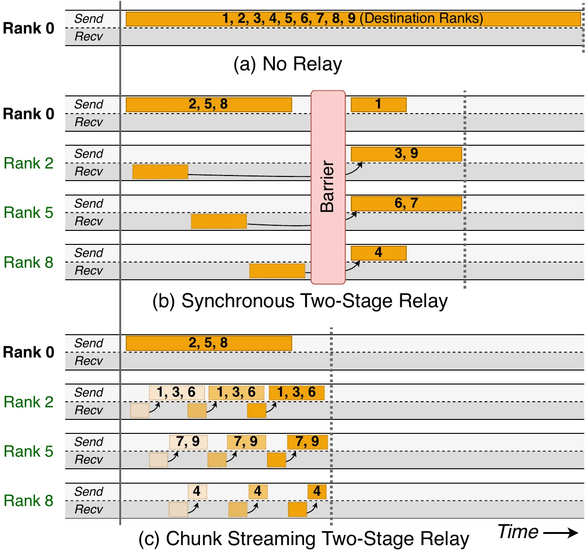 图（原文 Figure 10）：设一个专家在 rank 0 上、要组播到副本 rank 1 至 9，其中 rank 2、5、8 被选为中继；为清晰起见图中省略了叶子 rank 与更细的 tile 划分，每个 rank 显示其发送与接收通道沿时间轴的状态。三种方案的差别在于：(a) 源直发时 rank 0 的发送通道被占满整个时长，成为唯一瓶颈；(b) 引入两级中继后源的负担下降，但中间有一个 Barrier，第二阶段必须等第一阶段全部完成；(c) chunk 流式中继下，中继 rank 收到一个 chunk 就开始向叶子转发，两阶段在时间上重叠、无屏障。这张图支撑上一段的结论——降低 fan-out 靠的是两级结构，而消除两级串行代价靠的是 chunk 级流式。 中继选谁不是任意的。kernel 构建的中继拓扑要平衡所有 rank 的出向流量：先按复制方案统计每个 rank 被分配的发送字节量，然后逐个处理可中继的热专家。对每个热专家，从它的副本 rank 中挑发送量最小的作为第一阶段中继；剩余副本则挂到「接收这个新叶子之后发送量仍然最小」的那个中继上。处理下一个热专家之前，源 rank 与各中继的发送量会按它们分别要发给中继和叶子的量更新（§6.2）。 论文说明这个调度只决定中继树，每条边仍采用 chunk 流式传输；这样热专家的 fan-out 就被摊到有空余发送能力的 rank 上（§6.2）。 回到贯穿示例：第 4 章的方案给 $e_0$ 建了 2 个副本，$\lvert\mathcal{H}(e_0)\rvert=3$，需要发出的远端份数是 2；无论按远端份数还是按含主实例的实例数 3 与阈值比较，都不超过中继阈值 4，因此不启用中继，$r_0$ 直接发给 $r_2$ 与 $r_3$。这与论文实测的一致——Figure 16 显示初始不均衡度为 1.5 与 2.0 时启用中继的主专家数为 0。 为了隔离通信优化本身的效果，论文把主流通信后端适配到 RSN 上做专家复制，在完全相同的均衡方案下与 UltraEP 对比。DeepEP 是在它原有的 token dispatch 基础上被调优来做专家搬运的；torch.distributed 的批量 send/recv 作为更通用的基线（§8.5）。 实验条件是 Qwen3-235B-A22B、EP64，测量对象是专家权重分发的通信延迟，五档初始不均衡度与 Figure 15 的模拟设置一致。原文 Figure 16 为柱状图、未逐柱标注数字，表中数值由本页从图中读取，用于呈现各方案的相对关系与趋势；论文正文给出的结论性区间见下文。 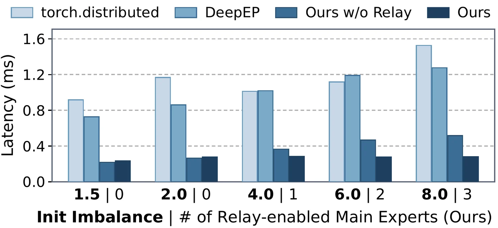 图（原文 Figure 16）：横轴是初始不均衡度、并标注该档下启用中继的主专家数，纵轴是专家权重分发延迟。三个读法值得注意：UltraEP 相对 torch.distributed 与 DeepEP 在所有档位都有 3.1$\times$ 到 5.5$\times$ 的加速；随着 fan-out 增长（对应更高的初始不均衡），UltraEP 维持在约 0.28 ms 近乎恒定，而无中继变体呈线性上升；最低两档下中继未激活，UltraEP 与无中继变体几乎相同，说明自适应策略在不需要中继时只付出可忽略的控制开销。论文对高倾斜、大 fan-out 场景下中继的额外增益给出的区间是 1.3$\times$ 到 1.8$\times$。 这一段补充「设备侧一次搬运具体怎么发生」以及「反向如何找回前向的方案」，两者都是上述机制能落地的前提。 RSN 内存语义：UltraEP 在 RSN scale-up fabric 上采用 GPU 发起的、单侧的 peer memory 访问。初始化阶段，所有 rank 为冗余权重与梯度、放置与负载元数据以及各类 flag 分配对称缓冲，然后把 RSN 内的 peer handle 解析成常驻设备的地址表；传输 kernel 消费紧凑的任务描述符，通过 load/store 原语访问对端缓冲（§7）。「单侧」意味着发送方直接读写对端显存、不需要对端参与协调，这也是 chunk ready flag 这种轻量同步能成立的基础。 运行时定位：UltraEP 被实现为与训练/服务框架、MoE token all-to-all 后端都解耦的独立运行时。核心库约 9.6K 行 C++（含设备 kernel）与 Python；集成进 Megatron-LM（训练）与 SGLang（服务）各低于 1K 行额外代码；token 的 dispatch 与 combine 用 DeepEP 的 hybrid-ep 分支（v1.2.1+7febc6e，该分支针对机架内通信优化）。因为全部在设备上执行，UltraEP 避免了主机与设备之间的传输，并保留了设备操作的 graph capture（§7）。 反向如何找回前向的方案：冗余专家由 UltraEP 作为层间共享的内部缓冲维护，主专家的持久模型状态由外部框架承载；冗余专家被排除在框架侧的参数与梯度桶、优化器状态与 checkpoint 之外。反向时 UltraEP 给每个在飞的 MoE 调用分配一个 virtual layer ID，它把放置与重路由元数据同具体的（真实层, microbatch）在一个环形缓冲里做哈希。这个 ID 经 torch.autograd 传递，使反向的权重重实体化与梯度归约能取回匹配的前向均衡方案。把环形缓冲大小设为最大在飞 microbatch 数，就能容纳流水线并行与 virtual PP，同时让 UltraEP 不必关心跨 microbatch 与跨 stage 的 PP 调度细节。因为只在 EP 组内起作用，UltraEP 与 attention 侧 DP、TP 以及模型级 DP 正交（§7）。 为什么用 persistent kernel，而不是「每个副本发一次传输」？ 论文识别的瓶颈是非载荷开销被放大：对 RSN 上的不规则权重或梯度同步，瓶颈从链路带宽转移到控制路径开销——任务切分与流水、数据暂存、动态寻址，这些阻碍带宽被吃满（§4.4）。每个副本发一次传输意味着每次都要重做这套控制动作，而副本数量随均衡方案逐层变化、数量可观。 UltraEP 的做法是：权重与梯度切成固定大小 tile，方案编译成常驻设备的 tile 搬运任务；跑一个 persistent kernel，其线程块反复从全局任务流取下一个 tile，并对共享内存里的 tile 做双缓冲——tile $i$ 在被写出或归约时，同一线程块已取好下一个索引并开始载入 tile $i+1$（§6.1）。论文对效果的表述是：方案相关的任务查表、地址翻译与同步开销被折进 tile 流水线、被数据搬运掩盖，而不是每次副本传输都暴露成独立的控制步骤。 此外线程块数量是可调的资源旋钮：前向关键路径上多给以吃满带宽，被重叠的反向路径上用可配置的 SM 占用限制住，避免与同 SM 上的反向计算 kernel 争抢（§6.1）。 两级中继为什么能降低瓶颈，代价是什么？ fan-out 的界在发送侧：每个 rank 最多只有 $N_{\mathrm{slot}}$ 个入站副本，但它可能要把好几个热专家推给很多目的地（§6.2）。这与 Eq.(5) 一致——权重分发延迟正比于 $\max_r\sum_{e\in\mathcal{E}_r}(\lvert\mathcal{H}(e)\rvert-1)$。设某专家有 $n=\lvert\mathcal{H}(e)\rvert-1$ 个远端目的地，直发时源要发 $n$ 份；改成两级、选 $k$ 个中继后，源发 $k$ 份、每个中继平均发 $n/k$ 份，两级宽度在 $k=\sqrt{n}$ 时相等，此时较大者取到最小值 $\sqrt{n}$。论文的取值正是把中继前沿放在 $\sqrt{\lvert\mathcal{H}(e)\rvert-1}$ 附近，说明是它近似平衡两级并相应降低源的关键 fan-out。 代价是多出一跳。所以论文只对副本数超过中继阈值（设为 4）的专家启用中继。实测印证了这个自适应策略的价值：初始不均衡 1.5 与 2.0 时启用中继的主专家数为 0，UltraEP 与无中继变体的延迟几乎相同（0.24 对 0.22、0.28 对 0.27 ms），说明不需要时只付可忽略的控制开销；而在 4.0、6.0、8.0 三档下，无中继变体从 0.37 涨到 0.52 ms，UltraEP 维持在 0.28 到 0.29 ms（Figure 16）。论文给出的中继额外增益区间是 1.3$\times$ 到 1.8$\times$。 另外中继选谁也有讲究：按复制方案统计各 rank 已分配的发送字节量，从该专家的副本 rank 中挑发送量最小的作中继，剩余副本挂到「接收后发送量仍最小」的中继上，从而把 fan-out 摊到有空余发送能力的 rank 上（§6.2）。 为什么中继要按 chunk 而不是按整个专家转发？ 如果中继必须收完整个专家的全部 tile 才能开始向叶子转发，两个阶段就是串行的：总耗时约等于第一阶段加第二阶段，两级结构省下的 fan-off 收益被串行代价吃掉一部分。论文图中的同步两级方案还需要一个全局 Barrier 来分隔两个阶段。 UltraEP 让中继调度作用在 chunk（连续 tile 组成的块）上：某个第一阶段 chunk 的全部 tile 到达中继 rank 后，kernel 写下该 chunk 的 ready flag；第二阶段等待对应的 flag，然后立刻把这个 chunk 从本地中继缓冲发给它的叶子（§6.2）。于是中继在继续接收后续 chunk 的同时已经在转发前面的 chunk，两个阶段在时间上重叠。论文的表述是这种 chunk 级流式让两阶段流水线化，既不用等整个专家、也不引入全局的跨阶段屏障。 Figure 10 的三种方案对照正是这个机制的直接呈现：(a) 源直发时源的发送通道被占满全程；(b) 两级中继降低了源的负担但中间有 Barrier；(c) chunk 流式下两阶段重叠、无屏障。这里能用 ready flag 做轻量同步，依赖的是 §7 的单侧 peer memory 访问——发送方直接读写对端显存，不需要对端参与协调。 前面几章说明了机制，这一章回答「实时均衡到底划不划算」。所有数字都附带实验条件。 测试床是一个公有云 RSN 集群，每个机架 64 张 GPU（16 台服务器），scale-up 链路带宽是 scale-out RDMA 网络的 8 到 10 倍。研究原型阶段，serving prefill 用一个机架，训练用两个或四个机架；论文另外做了跨多机架的生产级 MoE 训练（§8.1）。全部实验使用 bf16 精度。 这是原文 Table 2。训练侧 GLM4.5-106B 用 128 张卡（2 机架），Qwen3-235B 与 DeepSeek-V3 用 256 张卡（4 机架）；serving 侧两个模型各在单机架内跑一个 prefill 服务，采用 EP64 或 EP40 配合 attention 侧 DP。生产环境训练的是一个内部模型 RefMoE-288B-A16B，EP32。训练用机架内 EP，跨机架靠 DP 或 PP 扩展（§8.1）。细粒度专家加共享专家这一 MoE 架构演进方向见 DeepSeekMoE。 训练配方方面，三个开源模型用 Megatron-LM 训练、关闭系统侧均衡并保存中间 checkpoint 供评测使用；每次训练用内部语料的 200B token 子集，约 4500 个 global batch，batch size 从 1024 逐步升到 5120。GLM4.5-106B 与 Qwen3-235B 用 GShard 负载均衡损失、权重 $10^{-2}$；DeepSeek-V3 与 RefMoE 用 DeepSeek 配方，路由 bias 更新步长 $10^{-3}$、序列级损失权重 $10^{-4}$（§8.1）。 serving 负载由真实推理场景的查询构造：STEM 组包含代码（Codeforces、SWE-bench）、数学（DAPO-Math-17K）与科学（GPQA、OpenScience）；Mixed 组额外加入 LongBench 的多任务长上下文查询。输入长度从数百到数万 token，请求按泊松过程以不同速率到达（§8.1）。 六个对照对象（§8.1）：Megatron-LM（dev 分支，commit e93814b）与 SGLang（main 分支，v0.5.9+bbe9c7e）作为不做系统侧均衡的框架基线；EPLB，论文把它在 RSN 上的集成做了优化以使均衡开销可忽略，重均衡频率为 serving 每 50 个 prefill 步、训练每 3 个 global batch；LPLB，线性规划求解器，为每个 microbatch 调整重路由、限制每专家至多一个副本，与 EPLB 配对用在 Megatron-LM 里；EPLB$+$，喂精确负载、用标准 EPLB 加 round-robin 重路由、通信机制保持 UltraEP 的，用于隔离配额求解的贡献；Ideal，强制均衡的上界，通过改 router 让 token 均匀分到各专家来实现。 指标方面，训练报告每卡实际达到的 TFLOPS——做法是恢复后期 checkpoint 再跑一段能代表整个训练过程的续跑窗口，以避免为每个均衡基线都做一次完整训练；serving 报告整体 prefill 延迟，即 TTFT 随每秒请求数（RPS）的变化。两者都报告按所有层与批次平均的每 rank 最大值比均值的不均衡度（§8.1）。 每个基线都从第 3500 个 global batch 恢复同一个 checkpoint、再跑 20 个 batch，这个长度足以覆盖多个 EPLB 均衡周期、捕捉动态负载变化（§8.2）。 数值为原文 Figure 11 的标注值。不均衡度是均衡后按所有层与批次平均的 rank 级值（最大 rank 负载比均值）。 论文对这组结果的说明：三个模型上 UltraEP 均衡后的平均每 rank 不均衡度只有 1.01 到 1.03，吞吐在各 global batch 之间稳定；相比之下基线的吞吐可见地振荡，因为它们的均衡方案落后于实际的热专家、由此产生的 straggler 随时间变化（§8.2）。 DeepSeek-V3 这一列值得单独看。论文的解释是：路由补偿降低了整体不均衡（该模型的 Megatron-LM 基线不均衡度只有 1.30，明显低于另两个模型），但放大了短期负载摆动；在这种情形下 EPLB 与 LPLB 的表现与 Megatron-LM 相当甚至更差（EPLB 的 505 低于 Megatron-LM 的 509），而 UltraEP 仍在 96% ideal 以上（§8.2）。LPLB 的整体劣势论文归因于它有限的副本预算与求解开销。 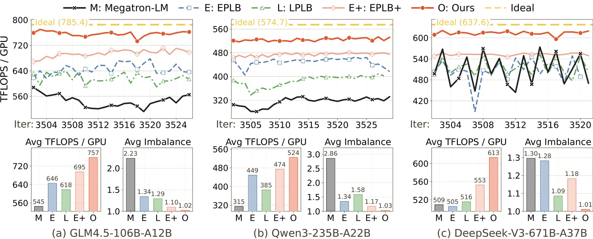 图（原文 Figure 11）：上排是三个模型在 20 个训练迭代上的吞吐折线，下排是平均 TFLOPS/GPU 与平均不均衡度的柱状图。折线图里需要关注的是波动幅度而非绝对高度：UltraEP 的曲线平稳，各基线的曲线明显起伏——这对应论文的判断，基线的均衡方案落后于实际热专家、产生的 straggler 随时间变化。柱状图给出上表中的全部数值。 读数注意：94.6% 是三个模型的平均值，不是逐配置的下界。单模型分别是 96.4%、91.2%、96.1%，Qwen3-235B 明显低于平均。同理摘要中的 94.3% 是训练（94.6%）与 serving prefill（93.9%）两项的总平均。 prefill 的负载比训练更倾斜、更非平稳，因为请求的语义域、提示词长度、批次组成与到达时间都在剧烈变化。论文的观察是在这种更强的扰动下 UltraEP 的增益更大，仍能达到 ideal 吞吐的 90% 到 97%；相对 SGLang 与 EPLB 分别高 1.56$\times$ 与 1.29$\times$，相对 EPLB$+$ 有 5% 到 24% 的增益（§8.2）。 数值为原文 Figure 12 标注的平均 rank 级不均衡度。Qwen3-235B 为 EP64、GLM4.7-358B 为 EP40 且 $N_{\mathrm{slot}}=4$，均在单机架内。摘要中「从 1.30 到 4.01 降到 1.01 到 1.04」的上界 4.01 就来自这里的 Qwen3-235B · Mixed 一行。 为了保证均衡质量对照是在完全相同的负载条件下进行的，论文记录了 SGLang 在满载下的完整路由 trace，再把它回放给其他被评测的均衡算法（§8.2）。 论文把 Qwen3-235B-A22B 训练的前向与反向延迟按 MoE 层平均分解，用来量化 UltraEP 的影响（§8.3）。 数值为原文 Figure 13 的标注值，单位为单个 MoE 层的平均延迟。 论文的逐项解读（§8.3）。不做均衡时，Megatron-LM 在 MoE 计算与 token all-to-all 两项上都有大幅膨胀——按上表数值计算，相对 ideal 其前向 MoE 计算是 3.15 倍、token all-to-all 是 4.13 倍（这两个倍数由本页从表中数值算出，论文只作定性表述）。启用 UltraEP 后，先看非 MoE 部分：相对 ideal 前向多 0.33 ms、反向可忽略，合计只占总延迟的 1.8%，论文据此判断热路径开销已被最小化、重叠是有效的。MoE 计算项已接近 ideal，只有冗余物理专家带来的轻微控制开销，这确认 rank 级负载不均衡已被基本消除。 剩下的 token all-to-all 项，UltraEP 相对 ideal 前向高 33%、反向高 10%。论文的归因是这来自现实中不均匀的 token 路由，与 ideal 里合成的均匀 dispatch 不同；对 DeepEP 而言，这种不规则性表现为其内部 token dispatch 流水线中的轻微 stall（§8.3）。 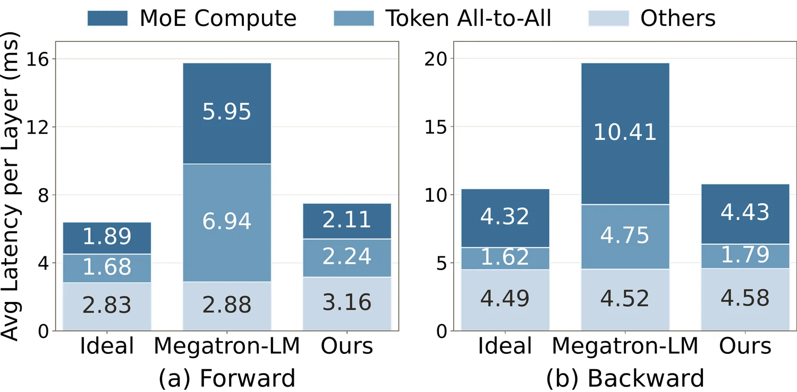 图（原文 Figure 13）：前向与反向的堆叠延迟分解，每组三根柱分别是 Ideal、Megatron-LM 与 UltraEP，堆叠成分为 MoE 计算、token all-to-all 与其余部分。需要关注的是 UltraEP 与 Ideal 两根柱的差异分布：差异几乎全部落在 token all-to-all 一段，而不是「其余部分」——后者才是热路径均衡开销所在。这张图支撑本节的两个结论：热路径开销只占总延迟 1.8%；剩余与 ideal 的差距主要在 all-to-all，来自真实路由的不均匀。 常见误解：把不均衡度 1.01 到 1.04 线性映射成「吞吐只差 1% 到 4%」。论文在 §8.2 训练段末明确，剩余与强制均衡的差距主要来自真实 MoE 训练中不均匀的路由本身，而不是残余不均衡或热路径均衡开销。上表的分解就是证据：热路径开销 1.8%，而 token all-to-all 前向高出 33% 这一项才是主要来源，它的成因是 ideal 用了合成的均匀 dispatch、现实做不到。 均衡除了影响延迟，也重塑活跃内存峰值，尤其在最热的接收 rank 上。论文的测量结果是：不做均衡时，MoE 活跃内存峰值相对 ideal 在训练中高 2 倍、在 serving 中高 11 倍；UltraEP 通过压平接收侧热点，大幅降低了 MoE 活跃峰值并保持接近 ideal（§8.4）。 论文列出这一收益的三重意义：直接降低显存溢出风险、提升模型扩展余量，并且可以避免为省内存而启用活跃值重计算所付的额外性能代价（§8.4）。 实验条件需要注意。训练侧论文关闭了活跃值重计算，以暴露按层累积的活跃内存上界，且观测到的峰值出现在负载倾斜度高的训练初期；serving 侧前向只保留当前层的瞬时活跃值，因此两者的 2 倍与 11 倍不是同一口径下的数字（§8.4）。 论文在比原型规模更大的真实 MoE 训练中评估 UltraEP 的稳健性与可扩展性，训练对象是内部模型 RefMoE-288B-A16B，EP32，使用内部训练栈（§8.1、§8.6）。 结果是：尽管长期运行中存在硬件与网络的波动，UltraEP 维持了 ideal 吞吐的 92% 以上，稳定性有所提升，相对不做均衡平均增益 9.6%。loss 曲线符合预期的预训练轨迹，论文给出的原因是 UltraEP 只改变物理执行逻辑、保留了训练语义（§8.6）。 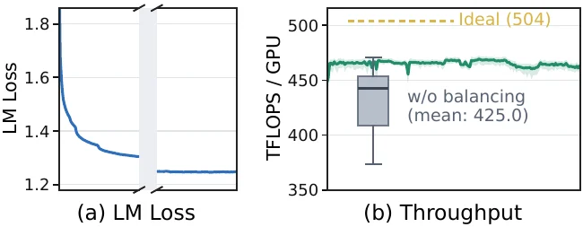 图（原文 Figure 17）：左侧是 RefMoE-288B-A16B 训练过程的 LM loss 曲线，形态是平滑下降的预训练轨迹，没有因启用均衡而出现异常。右侧是 batch size ramp-up 结束后稳定阶段的吞吐分布，标注 ideal 为 504 TFLOPS/GPU、无均衡的采样均值为 425.0。按 §8.6 的 9.6% 平均增益反推，UltraEP 的吞吐约为 466 TFLOPS/GPU，占 ideal 的 92.4%，与正文「92% 以上」一致。图注说明 ideal 取的是实测强制均衡吞吐的最好值以剔除环境波动，无均衡的数据从关闭 UltraEP 的续跑区间采样。 论文在摘要与正文里用了不同基线，混用会产生误读。三组数字的对应关系如下： 摘要的 1.49$\times$ 与正文的 1.42$\times$、1.56$\times$ 是什么关系？ 三个数都出自论文，但对照对象不同。摘要的 1.49$\times$ 是训练与 serving prefill 平均后、相对 no-balancing 的提升。§1 给出的 1.42$\times$ 是训练三模型相对 Megatron-LM 的平均，1.56$\times$ 是 serving prefill 相对 SGLang；§8.2 另外给出相对 EPLB 的 1.29$\times$。 训练侧的完整对照可以从 Figure 11 反算验证：三模型平均相对 Megatron-LM，EPLB 提升 20%、LPLB 12%、EPLB$+$ 29%、UltraEP 42%（§8.2）。所以引用这些数字时必须带上基线，否则「1.49 倍」很容易被误读成相对生产系统的绝对提速。同理达标率也有两个口径：摘要的 94.3% 是训练与 serving 的总平均，§1 分开给出的是训练 94.6%、serving prefill 93.9%，而单模型区间是 91.2% 到 96.4%。 均衡后不均衡度已经是 1.01 到 1.03，为什么吞吐还差 ideal 约 5%？ Figure 13 的分解给出了答案。相对 ideal，UltraEP 的非 MoE 部分前向多 0.33 ms、反向多 0.09 ms（可忽略），合计只占总延迟的 1.8%——这一项才是热路径均衡开销。MoE 计算项已接近 ideal（前向 2.11 对 1.89 ms），只有冗余物理专家带来的轻微控制开销，说明 rank 级不均衡确实基本被消除了。 差距主要在 token all-to-all：前向 2.24 对 1.68 ms（高 33%）、反向 1.79 对 1.62 ms（高 10%）。论文的归因是这来自现实中不均匀的 token 路由，与 ideal 里合成的均匀 dispatch 不同；对 DeepEP 而言表现为其内部 dispatch 流水线中的轻微 stall（§8.3）。换句话说，ideal 是把 router 改掉、强制均匀分发才达到的，那种均匀性在真实模型上做不到——即便各 rank 收到的 token 总数已经相等，这些 token 在专家之间的分布仍然不规则。 论文在 §8.2 训练段末明确了这个结论：剩余与强制均衡的差距主要来自真实 MoE 训练中不均匀的路由，而不是残余不均衡或热路径均衡开销。所以不能把不均衡度线性映射成吞吐差距。 均衡除了提升吞吐还带来什么？ 负载不均衡的第三个后果是超载设备上的活跃内存尖峰（§1）。收到过多 token 的 rank 需要为这些 token 保存更多的中间激活值，峰值出现在最热的接收 rank 上。论文的测量是：不做均衡时 MoE 活跃内存峰值相对 ideal，训练中高 2 倍、serving 中高 11 倍；UltraEP 通过压平接收侧热点，把 MoE 活跃峰值大幅降低到接近 ideal（§8.4）。 论文列出三重意义：直接降低显存溢出风险、提升模型扩展余量、避免为省内存而启用活跃值重计算所付的额外计算代价。实验条件需要注意——训练侧关闭了活跃值重计算以暴露按层累积的上界，且峰值取自负载倾斜度高的训练初期；serving 侧前向只保留当前层的瞬时活跃值。因此 2 倍与 11 倍不是同一口径，serving 那个更大的倍数部分来自它只有单层活跃值这个基数更小的分母。 生产训练那组结果的证据强度如何？ 结果本身是：RefMoE-288B-A16B 在 EP32 下维持 ideal 吞吐的 92% 以上，相对 no-balancing 平均增益 9.6%，稳定性有提升；loss 曲线符合预期的预训练轨迹，论文给的原因是 UltraEP 只改物理执行逻辑、保留训练语义（§8.6）。按 Figure 17 标注的 ideal 504、no-balancing 均值 425.0 反推，UltraEP 约 466 TFLOPS/GPU，占 ideal 的 92.4%，与正文一致。 限制有三条。一是模型与配置单一：只有 RefMoE-288B-A16B 这一个内部模型、EP32 这一个配置，用的是内部训练栈而非公开可复现的 Megatron-LM 路径。二是两个参照点都是估计值：ideal 取的是实测强制均衡吞吐的最好值（以剔除环境波动），no-balancing 是从关闭 UltraEP 的续跑区间采样，都不是与 UltraEP 严格同时同环境的对照。三是 loss 曲线只能说明「没有破坏收敛」，不能说明均衡改善了收敛——按论文自己的等价性论证，正确的预期本来就是曲线不变。 所以这组结果的合理解读是稳健性与可扩展性的存在性证明，不是覆盖多种生产配置的性能保证。此外 serving 侧的实验全部在单机架内完成，跨机架的 prefill 部署论文未做（§8.1）。 本章是分析性评价，内容属于分析性判断，不是论文的结论。 把优化目标改对了。已有方案优化重路由之前的专家热度，而实际决定耗时的是重路由之后各 rank 的总负载。UltraEP 用配额作为耦合变量直接瞄准后者，效果是同一副本集合下就能拿到更好的均衡（页面示例：1.0 对 round-robin 的 1.1667），并且顺带更省资源（Table 3：冗余槽消耗 45 对 107）。这是一个目标函数层面的修正，不是参数调优。 用配额避开了组合爆炸。精确负载让「复制要为重路由预留容量」这件事变成必需，决策空间随之变大。配额的设计让每次阈值探测在选副本时就把容量定下来，因此不必枚举副本集合、也不必做 token 级路由。求解耗时压到 0.111 ms 量级（模拟均值），这是它能放上热路径的前提。 内存与通信必须同时成立。值得注意的是三个机制之间的依赖关系：跨层复用把冗余槽压到 36 MB 与 72 MB 量级，才让「每层重搬」在显存预算上可行；但它同时制造了逐层权重实体化的紧期限，于是需要 tile 流水线与 chunk 中继把搬运压到亚毫秒才能满足这条期限。任何一环缺失，实时均衡都不成立。论文把这一点写成 co-design，从依赖链看确实如此。 训练语义不变是可论证的。梯度归约回主专家、优化器只更新主专家、冗余专家排除在 checkpoint 之外，加上 virtual layer ID 让反向取回匹配的前向方案，这套设计使等价性成为结构性质而不是经验观察。生产训练的 loss 曲线正常是这一论证的印证，而不是它的依据。 硬件前提很强。全部结论建立在「EP 组装得进一个 RSN 的 scale-up 域」之上。论文自己指出跨多机架搬专家状态在热路径上不可行，因此这套方法在普通 4/8 卡服务器集群上不适用——不是效果差一些，是机制不成立。测试床的 scale-up 带宽是 scale-out 的 8 到 10 倍，这个比例是可行性的关键参数，论文未给出该比例下降到多少时方法失效。 覆盖面窄于「MoE 推理优化」。不管 decode（论文给了理由，但这意味着 TPOT 侧的收益为零）、不管 token all-to-all 内核本身、不管专家内部的计算效率、不管跨机架的 EP。 最优性只是经验的。二分的每次探测用贪心可行性判定，贪心判为不可行的阈值未必真不可行。论文用 near-optimal 而非 optimal，也未给近似比。实测的 1.01 到 1.04 很接近理想，但这是在论文测试的负载分布上的结果，不是保证。 生产证据单薄。只有 RefMoE-288B-A16B 一个内部模型、EP32 一个配置，且 ideal 与 no-balancing 两个参照点都是采样估计。serving 侧全部实验在单机架内完成。 与冗余槽预算的关系需要注意。Figure 15 显示 $N_{\mathrm{slot}}=1$ 且初始不均衡达 6.0、8.0 时，UltraEP 也升到约 1.07 与 1.09。预算变紧、倾斜加剧时两者都会退化，UltraEP 只是退化得慢。论文实验中的 $N_{\mathrm{slot}}$ 是 2 或 4，这份余量本身也是显存成本。 适用条件：机架级节点上的大 EP MoE 训练或 serving prefill，负载非平稳，且每 rank 有两个以上冗余槽的余量。若负载本身足够平稳（比如某些固定域的推理服务），历史式方案的预测误差小，实时均衡的边际收益会明显下降。 与 EPLB 家族的位置关系：三者解同一个问题，差别在决策时机与负载保真度。EPLB 是「历史负载 + 周期性重布局」；LPLB 在 EPLB 之上为每个 microbatch 微调重路由，但限制每专家至多一个副本以控制开销；UltraEP 是「精确负载 + 每层每 microbatch」。论文构造 EPLB$+$（喂精确负载、保留 EPLB 的规划与 round-robin 重路由、换上 UltraEP 的通信）来隔离规划算法本身的贡献，这个基线设计是干净的。 与 MoonEP 的关系：两者都属于「用冗余专家在线纠正不均衡」这条路线，但目标函数不同。MoonEP 追求每个 rank 恰好收到 $S\times K$ 个 token 的完美均衡，靠固定大小 buffer 与静态形状消除主机同步；UltraEP 追求的是配额意义下的近最优，并把决策放上热路径。 与 DeepEP 的关系：不是竞品。UltraEP 用 DeepEP 做 token 的 dispatch 与 combine（§7），§8.5 中也把它适配来作专家权重搬运的通信基线。论文明确 MoE 通信库与计算优化（专用 all-to-all 内核、grouped-GEMM 的 kernel fusion、计算与通信的细粒度重叠调度）与 UltraEP 正交、可叠加以获得累积收益（§9）。 与算法侧路由正则的关系：互补而非替代。论文在 §2.2 明确辅助路由损失服务的是稳定优化、防止路由塌缩、保留专家特化，无法保证逐 microbatch 的实现负载均衡；系统侧技术纠正运行时不均衡，同样不能替代路由损失。 论文展望：因为 UltraEP 同时覆盖训练与推理，论文认为同一抽象可自然延伸到交替这两个过程的强化学习流水线（§10）。这是论文的展望，未做实验验证。 本页的论断编号与原文位置对应如下。§ 编号按 arXiv:2606.04101v3 编译顺序：§1 Introduction、§2 Background、§3 Expert Load Analysis、§4 UltraEP System Design、§5 Quota-Driven Planning、§6 RSN-Native Balancing Communication、§7 Implementation、§8 Evaluation、§9 Related Work、§10 Conclusion。 C1 大 EP 放大不均衡为三个后果并随 EP 度数复合——§1 第 2 段。C2 EPLB 的冗余专家策略与周期性部署——§1 第 3 段。C3 prefill 热度随语义域与批次漂移——§3「Serving Prefill」。C4 训练侧辅助损失负反馈与 microbatch 抖动——§3「Training」。C5 大 EP 转专家抖动为 rank 倾斜、EPLB 可能加剧不均衡——§3「Limitations of History-Based Balancing」。C6 精确负载迫使均衡进入关键路径——§1 第 4 段。C7 标准 RDMA 集群跨机搬运不可行——§1 第 4 段。C8 RSN 的 scale-up 域与带宽语义——§2.1。C9 控制面与数据面两个挑战——§1 第 5 段、§4.4。C10 逻辑与物理专家、主槽与冗余槽——§4.1。C11 只复制不重排及其理由——§4.1「Replication Only」。C12 跨层 buffer 复用与紧期限——§4.1「Cross-Layer Buffer Reuse」。C13 前向流水线与关键路径——§4.2「Forward」。C14 反向权重重实体化、梯度归约的等价性——§4.2「Backward」。C15 四条约束——§4.3「Constraints」。C16 二分加贪心判定的完整流程——§5.1「Quota Construction」与 Algorithm 1。C17 配额作耦合变量避开枚举——§5.1「Why efficient」。C18 本地优先不改变配额、不破坏阈值——§5.2「Quota Decomposition with Locality」。C19 累积配额与上界查找——§5.2「Token Assignment」。C20 GPU 原生求解的难点与做法——§5.3。C21 均衡流量的性质与两条路径——§6 开头。C22 persistent tile streaming——§6.1。C23 overlap-aware footprint——§6.1「Overlap-Aware Footprint」。C24 fan-out 界在发送侧、chunk streaming relay——§6.2。C25 load-aware relay scheduling——§6.2「Load-Aware Relay Scheduling」。C26 运行时定位与集成规模——§7 第 1 段。C27 RSN 内存语义——§7「RSN Memory Semantics」。C28 virtual layer ID 与端到端集成——§7「End-to-End Integration」。C29 直接优化重路由后负载上界的归因——§8.5「Balancing Quality」。C30 剩余差距来自真实路由——§8.2 训练段末。C31 all-to-all 增幅的归因与 DeepEP stall——§8.3。C32 活跃内存峰值的 2 倍与 11 倍——§8.4。C33 loss 曲线正常的原因——§8.6。C34 算法侧与系统侧均衡互补——§2.2 末段。C35 预测式设计缺乏实用性——§9。C36 通信与计算优化正交可叠加——§9 末句。C37 延伸到 RL 流水线——§10 末句（论文展望）。C38 decode 不作为均衡目标的理由——§3「Serving Prefill」。 前向目标 Eq.(1)、反向目标 Eq.(2)、MoE 计算代价 Eq.(3)、token all-to-all 代价 Eq.(4)、权重分发代价 Eq.(5)——均在 §4.3。超额与空闲定义 Eq.(6)——§5.1。二分区间初始化 $\tau_{\mathrm{lo}}=\beta\lceil\frac{1}{R}\sum_r\ell_r\rceil$、$\tau_{\mathrm{hi}}=\max_r\ell_r$ 与单次转移量 $\delta=\min(\mathrm{exc}_r,\mathrm{slk}_{t^\star},\mathrm{cap}_e)$——Algorithm 1 SolveReplication。比例分摊式 $q_{r,e,t}=\text{round}(\hat{\lambda}_{r,e}\hat{u}_{e,t}/\sum_{t'}\hat{u}_{e,t'})$——Algorithm 1 SolveReroute。重路由双向守恒 $\sum_{t\in\mathcal{H}(e)}q_{r,e,t}=\lambda_{r,e}$ 与 $\sum_{r\in\mathcal{R}}q_{r,e,t}=u_{e,t}$——§4.3 Table 1 的 $Q$ 行。中继前沿 $\sqrt{\lvert\mathcal{H}(e)\rvert-1}$——§6.2。本页对 $\sqrt{n}$ 使两级宽度相等的推导是由该式直接展开的中间步骤，不是论文原文。 主结果：训练与 serving 平均 94.3% ideal、相对 no-balancing 1.49$\times$、不均衡从 1.30–4.01 降到 1.01–1.04——摘要。训练 94.6%、serving prefill 93.9%、训练相对 Megatron-LM 1.42$\times$、prefill 相对 SGLang 1.56$\times$、专家复制相对主流后端 3.1$\times$–5.5$\times$——§1。prefill 相对 EPLB 1.29$\times$、相对 EPLB$+$ 增益 5%–24%、prefill 达 ideal 90%–97%——§8.2。生产训练 >92% ideal、相对 no-balancing 增益 9.6%——§8.6。 训练端到端逐模型数值（TFLOPS/GPU 与不均衡度）——Figure 11 标注值，实验条件为从第 3500 个 global batch 恢复、再跑 20 个 batch，GLM4.5-106B 用 128 卡 EP64-DP2、Qwen3-235B 用 256 卡 EP64-DP4、DeepSeek-V3 用 256 卡 EP64-PP4，$N_{\mathrm{slot}}$ 均为 2，bf16。三模型平均相对 Megatron-LM 提升 20%/12%/29%/42%——§8.2。 serving 逐模型逐数据域不均衡度——Figure 12 标注值，Qwen3-235B 为 EP64、GLM4.7-358B 为 EP40 且 $N_{\mathrm{slot}}=4$，单机架，负载为 STEM 与 Mixed 两组、泊松到达；均衡质量对照采用回放 SGLang 满载路由 trace 的方式（§8.2）。 延迟分解逐项数值——Figure 13 标注值，Qwen3-235B-A22B 训练、按 MoE 层平均。派生结论：非 MoE 前向额外 0.33 ms、占总延迟 1.8%，token all-to-all 前向 +33%、反向 +10%——§8.3。 活跃内存 2 倍与 11 倍——§8.4，训练侧关闭活跃值重计算并取初期高倾斜阶段峰值，serving 侧只含当前层瞬时活跃值。 消融五项指标（结果不均衡 1.19 对 1.03、求解耗时 0.153 对 0.111 ms、消耗的冗余槽数 107 对 45、最大 fan-out 8.5 对 6.8、在飞 token 99.9% 对 96.0%）——Table 3，为 Figure 15 全部模拟场景的平均值，初始负载用幂律分布合成。派生百分比 27.4%、57.9%、3.9 个百分点——§8.5。紧预算高倾斜下 EPLB$+$ 约 1.40、UltraEP 约 1.07 与 1.09——由本页从 Figure 15 下排柱状图读取（该图未逐柱标注）；论文正文的对应表述是 EPLB$+$ 高达 1.4 而 UltraEP 仍低于 1.1（§8.5）。 通信延迟五档四方案数值——由本页从 Figure 16 柱状图读取（该图未逐柱标注），Qwen3-235B、EP64。加速区间 3.1$\times$–5.5$\times$、中继增益 1.3$\times$–1.8$\times$、UltraEP 约 0.28 ms 近乎恒定——§8.5。 生产训练 ideal 504、no-balancing 均值 425.0——Figure 17 标注值，RefMoE-288B-A16B、EP32、内部训练栈；ideal 取实测强制均衡的最好值以剔除环境波动，no-balancing 从关闭 UltraEP 的续跑区间采样。 配置与内存：$u_{\min}=1024$、$\beta=1.01$——§4.3 Table 1；中继阈值 4——§6.2；Qwen3-235B-A22B 单冗余槽 3.3 GB 权重与 6.6 GB 梯度降到每 rank 36 MB 与 72 MB（94 个 MoE 层、128 专家）——§4.1。测试床每机架 64 卡（16 台服务器）、scale-up 是 scale-out 的 8–10 倍、prefill 用 1 机架、训练用 2 或 4 机架——§8.1。被测模型配置——Table 2。训练配方（200B token 子集、约 4500 global batch、batch size 1024 升至 5120、GShard 损失权重 $10^{-2}$、DeepSeek 配方 bias 步长 $10^{-3}$ 与序列级损失权重 $10^{-4}$）——§8.1。基线版本（Megatron-LM dev commit e93814b、SGLang v0.5.9+bbe9c7e、EPLB 重均衡频率 prefill 50 步与训练 3 个 global batch、LPLB 限每专家一个副本）——§8.1。运行时规模（核心库约 9.6K 行、框架集成各低于 1K 行、DeepEP hybrid-ep 分支 v1.2.1+7febc6e）——§7。 本页 11 张图片全部来自论文 v3 的 TeX 源码 论文的 Figure 3（bg-ep）、Figure 4（motive_serving_load）、Figure 5（motive_train_load）、Figure 9（tech-timeline-bwd）、Figure 12（eval_serving_e2e）、Figure 14（eval_mem_breakdown）未入页面：Figure 3 的内容由 MoE 大模型推理与服务基础 覆盖；Figure 4 与 5 的结论由 Figure 6 与正文数字支撑；Figure 9 的反向时间线由正文第 3.5 节文字说明；Figure 12 与 14 的结论由本页的数字表格给出。 第 1 至 6 章的机制描述、公式与实验数字均为论文事实，附有上述原文定位。第 7 章「方法评价」整章是分析性判断，不是论文结论，章首已用提示框标明。此外正文中另有四处随文标记的推断：第 4.9 节末尾关于「二分加贪心判定不保证全局最优」的判断（依据是 §5.1 用的是 greedy feasibility oracle、论文全篇用 near-optimal 而非 optimal 且未给最优性证明）；同节把 45 对 107 的冗余槽差距进一步归因到 $u_{\min}$ 这一具体机制（论文只归因于「有足够收益才实体化副本」的整体设计）；第 1.3 节中用 EP=8 对 EP=64 的专家数对比来解释摊薄能力消失的机制（论文只给结论「大 EP 直接把路由动态转成 rank 倾斜」与「每 rank 常 2 或 4 个主专家」，具体的十六分之一算例是本页构造的说明）；第 5.5 节中 $k=\sqrt{n}$ 使两级宽度相等的推导（由论文给出的中继前沿取值直接展开）。第 6.7 节的基线澄清表是对论文不同位置数字的整理，各行出处已在表内标明。 本页的贯穿示例（$R=4$、8 个逻辑专家、每 rank 2 个主专家、$N_{\mathrm{slot}}=1$、$u_{\min}=1$ 个单位、负载矩阵与初始 rank 负载 12/6/4/2）全部是构造的，不是论文的实验数据。构造目的是让二分搜索的三次探测、配额构造、本地优先重路由都能手算复核。由它得出的所有数值——最终阈值 6、四个 rank 各 6、不均衡 1.0、消耗 2 个冗余槽、round-robin 对照的 1.1667、跨 rank 在飞 token 41.7% 对 54.2%——都是这个构造示例的结果，与论文实验数字无关。示例规模远小于论文实验（EP=4 对 EP64、8 个专家对 128 至 256 个）。 第 4 章折叠块中的代码是 Algorithm 1 的 CPU 串行 Python 实现，已实际运行，页面展示的是真实输出。 第 1.3 节把「摊薄能力」作为解释性说法，用于说明为何每 rank 专家数变少会放大不均衡；它解释的只是「单个专家变热对本 rank 总负载的相对影响随专家数减少而增大」这一局部关系，不用于定量预测某个 EP 度数下的不均衡度。第 4.2 节把配额称为「一个变量绑住两件事」，这是对 $u_{e,r}>0$ 当且仅当该 rank 承载实例、且数值即为该实例负载这一定义的复述，不是额外的机制。第 5.5 节对 $\sqrt{n}$ 的直观推导只说明两级宽度何时相等，未考虑链路争用、chunk 粒度与实际拓扑，因此不能用它预测中继的实际加速比——实际值见 Figure 16。 本页对论文内容有以下简化。第一，Algorithm 1 的展示省略了 GPU 并行化细节，只保留算法逻辑；这足以说明配额如何耦合复制与重路由，但不能用来评估求解耗时——0.111 ms 那个数字属于论文的 GPU 实现。第二，Eq.(3) 至 Eq.(5) 在论文中是正比关系而非等式，本页的代入检查只验证取值方向与相对变化，不给出绝对时间。第三，前向与反向流水线的说明省略了与 attention、gate 等非 MoE 部分的具体重叠安排，只保留与均衡直接相关的依赖；这不影响关键路径的判断，但页面无法据此推断完整的单层时间线。第四，DeepEP 的 token dispatch 内核实现、Megatron-LM 与 SGLang 的框架内部结构、各被测模型的架构差异、训练语料构成、交换机内组播（SHARP 式）机制与活跃值重计算的机制均未展开，理由是它们属于其他独立工作或只影响工程规模，不改变本页四个核心问题的答案。 另有一处版本相关的说明：部分转述该论文的中文站点提到「2560 张 GPU 的生产训练验证」，但 arXiv v3 的 TeX 源码中 §8.6 只写「比原型规模更大」，摘要亦无此数字，无法在固定版本中定位，因此本页不引用。同理 §8.5 正文给出的加速区间是 3.1$\times$ 至 5.5$\times$，本页按论文表述引用，未使用由 Figure 16 读数反算的值。4.5 用贯穿示例走完求解
Algorithm 1 的完整实现：验证二分过程、配额构造与两个对照
import math
R = 4 # EP 组内 rank 数
N_SLOT = 1 # 每个 rank 的冗余槽数
U_MIN = 1 # 最小有用配额（1 单位 = 1024 token）
BETA = 1.01 # 目标均衡系数
home = {0: 0, 1: 0, 2: 1, 3: 1, 4: 2, 5: 2, 6: 3, 7: 3} # 逻辑专家 -> home rank
E = sorted(home)
mains = {r: [e for e in E if home[e] == r] for r in range(R)}
# 全局负载矩阵 lambda[r][e]：源 rank r 上被路由到逻辑专家 e 的 token 数
lam = [
[4, 1, 1, 1, 0, 1, 0, 0], # rank 0 发出
[3, 0, 1, 1, 1, 0, 0, 0], # rank 1 发出
[2, 1, 1, 0, 1, 1, 0, 0], # rank 2 发出
[1, 0, 0, 1, 0, 0, 1, 1], # rank 3 发出
]
lam_e = {e: sum(lam[r][e] for r in range(R)) for e in E}
ell = {r: sum(lam_e[e] for e in mains[r]) for r in range(R)}
def imbalance(loads):
return max(loads.values()) / (sum(loads.values()) / len(loads))
def solve_replication():
"""二分搜索最小可行阈值 tau，每次探测跑一遍贪心可行性判定。"""
tau_lo = BETA * math.ceil(sum(ell.values()) / R)
tau_hi = float(max(ell.values()))
best, trace = None, []
while tau_lo < tau_hi:
tau = math.floor((tau_lo + tau_hi) / 2)
exc = {r: max(ell[r] - tau, 0) for r in range(R)}
slk = {r: max(tau - ell[r], 0) for r in range(R)}
u = {(e, r): 0 for e in E for r in range(R)}
for e in E:
u[(e, home[e])] = lam_e[e]
slots = {r: 0 for r in range(R)}
hosts = {e: {home[e]} for e in E}
for r in sorted(range(R), key=lambda x: -exc[x]): # 超载 rank 按残余超额降序
if exc[r] <= 0:
continue
for e in sorted(mains[r], key=lambda x: -lam_e[x]): # 主专家按总负载降序
cap = u[(e, home[e])]
while exc[r] > 0 and cap > 0:
adm = [t for t in range(R) # 空闲 / 槽位 / 不重复
if slk[t] > 0 and slots[t] < N_SLOT and t not in hosts[e]]
if not adm:
break
t_star = max(adm, key=lambda t: slk[t]) # 选空闲最大的
delta = min(exc[r], slk[t_star], cap)
if delta < U_MIN: # 配额下限剪枝
break
u[(e, home[e])] -= delta
u[(e, t_star)] += delta
hosts[e].add(t_star)
slots[t_star] += 1
exc[r] -= delta
slk[t_star] -= delta
cap -= delta
feasible = sum(exc.values()) == 0
trace.append((tau, feasible, {r: sum(u[(e, r)] for e in E) for r in range(R)}))
if feasible:
best = (tau, dict(u), {e: set(v) for e, v in hosts.items()})
tau_hi = tau
else:
tau_lo = tau + 1
return best, trace
def solve_reroute(u, hosts, locality=True):
"""把配额 U 分解成源到实例的拆分 Q；locality=False 时跳过本地优先。
两个分支都保持双向守恒：按源看凑满该源需求，按目标看凑满该实例配额。
"""
q = {}
for e in E:
H = sorted(hosts[e])
lam_hat = {r: lam[r][e] for r in range(R)}
u_hat = {t: u[(e, t)] for t in H}
if locality:
for t in H: # 同 rank 的 token 先吃本地配额
take = min(lam_hat[t], u_hat[t])
if take:
q[(t, e, t)] = take
lam_hat[t] -= take
u_hat[t] -= take
for r in range(R): # 残余需求按残余配额比例分摊
need = lam_hat[r]
if need <= 0:
continue
residual = sum(u_hat.values())
for t in H:
if need <= 0 or u_hat[t] <= 0:
continue
share = min(round(lam_hat[r] * u_hat[t] / residual), u_hat[t], need)
if share:
q[(r, e, t)] = q.get((r, e, t), 0) + share
u_hat[t] -= share
need -= share
for t in H: # 取整残差按剩余配额补齐
if need <= 0:
break
take = min(need, u_hat[t])
if take:
q[(r, e, t)] = q.get((r, e, t), 0) + take
u_hat[t] -= take
need -= take
return q
def round_robin_reroute(hosts):
"""对照：副本集合不变，token 在实例间轮转均分。"""
loads = {r: 0 for r in range(R)}
for e in E:
H = sorted(hosts[e])
for i in range(lam_e[e]):
loads[H[i % len(H)]] += 1
return loads
best, trace = solve_replication()
tau, u, hosts = best
print("专家总负载 lambda_e :", lam_e)
print("初始 rank 负载 ell_r:", ell, "均值", sum(ell.values()) / R,
"初始不均衡", round(imbalance(ell), 3))
print("\n二分搜索过程（阈值 tau / 可行性 / 该 tau 下重路由后各 rank 负载）")
for t_, ok, loads in trace:
print(f" tau={t_:2d} {'可行' if ok else '不可行':4s} {loads}")
print("\n最终阈值 tau =", tau)
print("非零配额 u[e,r] :", {f"e{e}@r{r}": v for (e, r), v in sorted(u.items()) if v})
post = {r: sum(u[(e, r)] for e in E) for r in range(R)}
print("重路由后 rank 负载:", post, " 不均衡 =", round(imbalance(post), 4))
print("消耗冗余槽:", sum(1 for (e, r), v in u.items() if v and r != home[e]), "/", R * N_SLOT)
rr = round_robin_reroute(hosts)
print("\n对照：同一副本集合 + round-robin 重路由")
print(" rank 负载:", rr, " 不均衡 =", round(imbalance(rr), 4))
print("\n专家 e0 的重路由拆分 q[源, e0, 目标]（配额 4/2/4 分别在 r0/r2/r3）:")
q = solve_reroute(u, hosts)
for (r, e, t), v in sorted(q.items()):
if e == 0:
print(f" 源 r{r} -> 目标 r{t}: {v} ({'本地' if r == t else '跨 rank'})")
for tag, loc in (("本地优先", True), ("关闭本地优先", False)):
qq = solve_reroute(u, hosts, locality=loc)
for e in E: # 断言双向守恒，两个分支都必须成立
for r in range(R):
assert sum(v for (a, b, _), v in qq.items() if a == r and b == e) == lam[r][e]
for t in sorted(hosts[e]):
assert sum(v for (_, b, c), v in qq.items() if b == e and c == t) == u[(e, t)]
tot = sum(qq.values())
cross = tot - sum(v for (r, _, t), v in qq.items() if r == t)
print(f"{tag}：双向守恒成立，跨 rank 在飞 token {cross}/{tot} = {round(100 * cross / tot, 1)}%")
专家总负载 lambda_e : {0: 10, 1: 2, 2: 3, 3: 3, 4: 2, 5: 2, 6: 1, 7: 1}
初始 rank 负载 ell_r: {0: 12, 1: 6, 2: 4, 3: 2} 均值 6.0 初始不均衡 2.0
二分搜索过程（阈值 tau / 可行性 / 该 tau 下重路由后各 rank 负载）
tau= 9 可行 {0: 9, 1: 6, 2: 4, 3: 5}
tau= 7 可行 {0: 7, 1: 6, 2: 4, 3: 7}
tau= 6 可行 {0: 6, 1: 6, 2: 6, 3: 6}
最终阈值 tau = 6
非零配额 u[e,r] : {'e0@r0': 4, 'e0@r2': 2, 'e0@r3': 4, 'e1@r0': 2, 'e2@r1': 3, 'e3@r1': 3, 'e4@r2': 2, 'e5@r2': 2, 'e6@r3': 1, 'e7@r3': 1}
重路由后 rank 负载: {0: 6, 1: 6, 2: 6, 3: 6} 不均衡 = 1.0
消耗冗余槽: 2 / 4
对照：同一副本集合 + round-robin 重路由
rank 负载: {0: 6, 1: 6, 2: 7, 3: 5} 不均衡 = 1.1667
专家 e0 的重路由拆分 q[源, e0, 目标]（配额 4/2/4 分别在 r0/r2/r3）:
源 r0 -> 目标 r0: 4 (本地)
源 r1 -> 目标 r3: 3 (跨 rank)
源 r2 -> 目标 r2: 2 (本地)
源 r3 -> 目标 r3: 1 (本地)
本地优先：双向守恒成立，跨 rank 在飞 token 10/24 = 41.7%
关闭本地优先：双向守恒成立，跨 rank 在飞 token 13/24 = 54.2%solve_replication 对应 Algorithm 1 的 SolveReplication，包含 Eq.(6) 的 exc / slk、二分区间初始化、按残余超额与 $\lambda_e$ 双重降序的访问顺序、$\delta$ 的三重最小值与 $u_{\min}$ 剪枝；solve_reroute 对应 SolveReroute，包含本地配额优先消费与按残余配额比例分摊。round_robin_reroute 不在论文算法内，是为对照而构造的。4.6 重路由：本地优先为什么不破坏已解出的阈值
4.7 从配额到每个 token 的目标
4.8 为什么这个求解能放进 GPU kernel
4.9 消融：配额求解相对强化基线的差距
指标（模拟均值） EPLB$+$ UltraEP 差距 结果不均衡度（rank 级） 1.19 1.03 — 求解耗时 0.153 ms 0.111 ms 省 27.4% $\sum_e\lvert\mathcal{H}(e)\rvert$（消耗的冗余槽数） 107 45 少 57.9% $\max_e\lvert\mathcal{H}(e)\rvert$（最大 fan-out） 8.5 6.8 — 在飞 token 占比 99.9% 96.0%（关闭本地优先为 98.4%） 降 3.9 个百分点
本章问题
解答：差在优化目标错位。round-robin 只让某专家的 token 在其副本间均分，看不到各副本所在 rank 上还有多少别的负载
解答：为了不建无效副本。建一个副本要付出前向权重搬运与反向梯度归约的完整代价，若它只承接零星流量，收益抵不上开销
解答：因为它只改变「哪个源 rank 消费某个配额」，不改变配额本身；阈值由各 rank 接到的总量决定，而那个总量恒等于配额
解答：不是全局最优。每次探测用的是贪心可行性判定，它判为不可行的阈值未必真的不可行；论文用词是 near-optimal 且未给最优性证明
5. 把不规则的专家搬运做成 tile 流水线与 chunk 中继
5.1 均衡流量不是集合通信
均衡方案
第 4 章解出的槽位映射与配额，决定哪些专家要搬到哪些 rank
tile 任务流
权重与梯度切成固定大小 tile，方案编译成常驻设备的搬运任务描述符
persistent kernel
线程块反复取下一个 tile，共享内存双缓冲；热专家的 fan-out 走 chunk 中继树
RSN 单侧访存
GPU 发起的单侧 peer memory 访问，经常驻设备的地址表用 load/store 原语读写对端缓冲
5.2 persistent tile streaming：把控制开销折进流水线
5.3 前向打满带宽，反向留出余量
5.4 热专家的 fan-out 瓶颈在发送侧
5.5 chunk streaming relay：两级中继加流水线
5.6 中继树按已分配的发送量来选
5.7 通信实测：随 fan-out 增长维持近乎恒定
初始不均衡度 torch.distributed DeepEP UltraEP 无中继 UltraEP 启用中继的主专家数 1.5 0.92 ms 0.73 ms 0.22 ms 0.24 ms 0 2.0 1.17 ms 0.86 ms 0.27 ms 0.28 ms 0 4.0 1.01 ms 1.02 ms 0.37 ms 0.29 ms 1 6.0 1.12 ms 1.20 ms 0.47 ms 0.28 ms 2 8.0 1.53 ms 1.27 ms 0.52 ms 0.28 ms 3
实现层面：RSN 内存语义与端到端集成如何配合上述机制
本章问题
解答：因为瓶颈不在链路带宽而在控制路径。每副本一次传输会把任务查表、地址翻译与同步暴露成独立步骤；persistent kernel 把它们折进 tile 流水线
解答：瓶颈是发送侧的 fan-out，两级把源的 $n$ 份发送降到约 $\sqrt{n}$ 份；代价是多一跳延迟，所以只对副本数超过 4 的专家启用
解答：按整个专家转发会让两级串行、还需要全局屏障；按 chunk 转发让两级流水线化
6. 实验结果：均衡后逼近强制均衡上界，剩余差距来自路由本身
6.1 实验设置与基线
模型 专家数（top-$k$） 并行配置（训练 | 服务） $N_{\mathrm{slot}}$ GLM4.5-106B-A12B 128 (8) EP64-DP2 | — 2 Qwen3-235B-A22B 128 (8) EP64-DP4 | EP64 2 GLM4.7-358B-A32B 160 (8) — | EP40 4 DeepSeek-V3-671B-A37B 256 (8) EP64-PP4 | — 2 6.2 训练端到端
方法 GLM4.5-106B
TFLOPS/GPU（不均衡度）Qwen3-235B
TFLOPS/GPU（不均衡度）DeepSeek-V3
TFLOPS/GPU（不均衡度）平均相对
Megatron-LMMegatron-LM 545（2.23） 315（2.86） 509（1.30） — EPLB 646（1.34） 449（1.34） 505（1.28） +20% LPLB 618（1.29） 385（1.58） 516（1.09） +12% EPLB$+$ 695（1.10） 474（1.17） 553（1.18） +29% UltraEP 757（1.02） 524（1.03） 613（1.01） +42% Ideal（强制均衡） 785.4 574.7 637.6 — UltraEP 达到 Ideal 的比例 96.4% 91.2% 96.1% 94.6%
6.3 serving prefill 端到端
模型与数据域 SGLang EPLB EPLB$+$ UltraEP Qwen3-235B · STEM 3.68 2.59 1.11 1.04 Qwen3-235B · Mixed 4.01 2.56 1.11 1.03 GLM4.7-358B · STEM 3.09 2.05 1.08 1.01 GLM4.7-358B · Mixed 2.06 1.80 1.06 1.01 6.4 延迟分解：热路径开销到底多少
方向与项目 Ideal Megatron-LM UltraEP UltraEP 相对 Ideal 前向 · MoE 计算 1.89 ms 5.95 ms 2.11 ms +0.22 ms 前向 · token all-to-all 1.68 ms 6.94 ms 2.24 ms +33% 前向 · 其余部分 2.83 ms 2.88 ms 3.16 ms +0.33 ms 反向 · MoE 计算 4.32 ms 10.41 ms 4.43 ms +0.11 ms 反向 · token all-to-all 1.62 ms 4.75 ms 1.79 ms +10% 反向 · 其余部分 4.49 ms 4.52 ms 4.58 ms +0.09 ms
6.5 活跃内存峰值
6.6 生产 MoE 训练
6.7 摘要数字的基线澄清
数字 基线 覆盖范围 出处 1.49$\times$ 不做任何均衡（no-balancing） 训练与 serving prefill 的平均 摘要 1.42$\times$ Megatron-LM 训练，三模型平均 §1 1.56$\times$ SGLang serving prefill §1、§8.2 1.29$\times$ EPLB serving prefill §8.2 94.3% 强制均衡 ideal 训练与 serving 的总平均 摘要 94.6% / 93.9% 强制均衡 ideal 分别为训练与 serving prefill §1 9.6% 不做均衡 生产训练 RefMoE-288B-A16B §8.6 本章问题
解答：基线不同。1.49$\times$ 相对「完全不做均衡」、是训练与 serving 的平均；1.42$\times$ 相对 Megatron-LM（训练）、1.56$\times$ 相对 SGLang（prefill）
解答：残余不均衡不是唯一损耗。主要来源是真实路由的不均匀让 token all-to-all 比 ideal 高 33%，而热路径开销只占 1.8%
解答：压平了接收侧的活跃内存热点。不做均衡时 MoE 活跃内存峰值是 ideal 的 2 倍（训练）与 11 倍（serving）
解答：能支持「可稳定运行、不改变收敛」，但覆盖面窄——只有一个内部模型、一个并行配置，且 ideal 与 no-balancing 都是采样估计
7. 方法评价：优化目标改对了，但硬件前提很强
7.1 优点
7.2 局限
7.3 适用场景与相邻工作
来源与范围说明
核心论断与原文定位
核心公式与原文定位
外部数字与实验条件
原图与原文对应
figs/ 目录，用 pdftoppm 渲染后转为 webp，未做裁剪或修改。对应关系：assets/img-01 为 Figure 1（intro-overview）、img-02 为 Figure 2（bg-rsn）、img-03 为 Figure 6（motive_eplb_imbalance）、img-04 为 Figure 7（tech-expert-layout）、img-05 为 Figure 8（tech-timeline-fwd）、img-06 为 Figure 10（tech-relay）、img-07 为 Figure 15（eval_solver_perf）、img-08 为 Figure 16（eval_comm_perf）、img-09 为 Figure 11（eval_train_e2e）、img-10 为 Figure 13（eval_latency_breakdown）、img-11 为 Figure 17（eval_prod）。Figure 编号经 arXiv HTML 版（v3）核对。论文事实与分析性判断
构造示例
round_robin_reroute 与 solve_reroute 的 locality=False 分支不属于论文算法，是为对照而构造的；后者按论文的比例分摊公式分配后，用剩余配额补齐取整残差，以保证它同样满足双向守恒、构成该形式化问题的一个合法解。代码不复现论文的 GPU 并行化（§5.3 的单 SM cooperative thread block 与跨 warp 多阈值探测），也不包含 token 级累积配额前缀扫描与实际的 all-to-all 执行。第 3 章折叠块中对三个代价模型的代入检查同样基于该构造示例。辅助解释与类比边界
简化条件及其限制